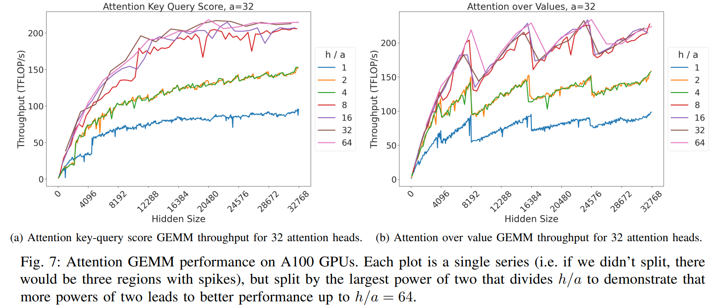
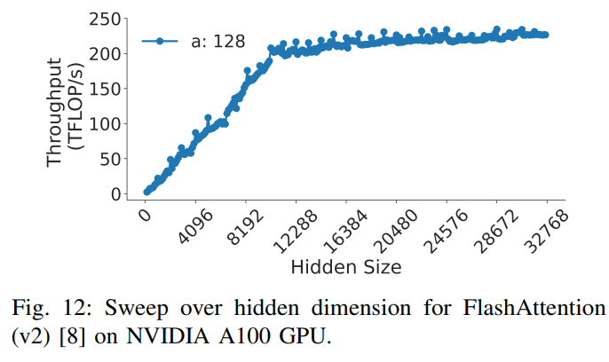

Profiling and Optimizing Training, Hands-On
A training step is a pipeline. The CPU fetches a batch, Python walks the model and hands thousands of kernels to the GPU, the GPU runs them, GPUs exchange gradients over the network, and the optimizer updates the weights. The step can only go as fast as its slowest stage. Optimizing without first finding that stage is guessing. You will usually guess wrong, because the stage you would naturally suspect (the matmuls) is often not the slow one.
This chapter is the practical companion to the theory chapters. It shows how to measure a step correctly, compute tokens/s and MFU from a real loop, read torch.profiler and Nsight Systems traces, find what is eating memory, and recognize the four classic pathologies from their traces. It then walks the standard optimization ladder on a small GPT training script, one change at a time, with measured numbers.
Why bother: the faster a model trains, the sooner it finishes, which matters for being first to publish and, at cluster scale, for the bill. Maximizing throughput is mostly running many small experiments, measuring each, and keeping the winner. Speed is not the only objective, though. Sometimes the modeling team will ask for a hyperparameter (a sequence length, a head count, a vocabulary size) that hurts throughput but helps the model. Throughput serves the model, not the other way round; the job is to know what each such choice costs, so the trade is made knowingly.
Prerequisites
- Concurrency, Part 7: GPU concurrency explains asynchronous kernel launch, CUDA streams and synchronization points. Everything in this chapter's timing sections depends on that model.
- GPU execution model covers what a kernel is, the roofline, launch overhead, CUDA graphs and the nsys/ncu reference. This chapter uses those tools and does not re-explain them.
- Training arithmetic covers FLOPs per token, MFU and HFU, activation memory and the caching allocator. This chapter computes those quantities for real runs.
- Accelerators: TFLOPS for how a vendor's peak FLOP/s figure is derived and the TFLOPS comparison table of peaks used as MFU denominators.
- Computer architecture: NUMA for what a NUMA node is; the NUMA affinity section here applies it to GPU servers.
- Architectures: SwiGLU for the gated MLP whose sizing is discussed in SwiGLU-based MLP.
- Model parallelism derivations: DDP, especially bucketing and overlap and ZeRO and FSDP. The multi-GPU sections here measure what that chapter derives.
- Distributed systems: data parallelism and networking: rendezvous over TCP for what
torchrun, ranks,--master_addrand the gloo backend are. - Computer architecture: pinned memory for why
pin_memory=Trueandnon_blocking=Truego together. - The toolkit chapter for the shell, virtual environments and JSON used in the runnable parts.
- Useful but optional: collectives internals and the GPU software stack.
- Forward links (later chapters, not needed to follow this one): decentralized training, serving hands-on, RL infrastructure, Debugging PyTorch (memory profiler) and Debugging distributed training (profilers, multi-node).
The chapter has two halves. The first half (methodology through the case study) is the measure-then-fix loop on a small model. The second half (from How to improve speed and save memory on) is the reference you come back to: batch sizes, gradient accumulation and checkpointing, memory-efficient optimizers, matrix shapes the hardware likes, NUMA binding, DataLoader settings and garbage collection.
Conventions used here. Everything marked [ran] was executed on an Apple M4 laptop (10 CPU cores, 16 GB unified memory, macOS 15.7, Python 3.14, PyTorch 2.15.0) on either the CPU or the Apple GPU through the MPS backend (Metal Performance Shaders, PyTorch's Apple-GPU device "mps"). The output shown is real output from that machine. Everything marked [GPU, untested] needs an NVIDIA GPU. It follows documented APIs but was not run for this chapter. Every number from the M4 is one machine on one day: it is an anecdote, not a benchmark. Where I repeated a run, I show the spread.
Setup for the runnable parts:
python3 -m venv /tmp/prof-venv && /tmp/prof-venv/bin/pip install torch numpy
mkdir -p /tmp/prof && cd /tmp/prof
# training data: the bytes of this book's own markdown (look at it before training on it)
cat ~/ml-engineering/training/*.md ~/ml-engineering/foundations/*.md > data.bin # use the path where you cloned this book
head -c 200 data.bin
# Training Arithmetic and Numerics: Going Deeper
## Prerequisites
This chapter assumes you know the math of transformers and backprop. It does not assume any systems background, but a few foun
The methodology
The loop: measure, classify, change one thing, re-measure
Performance work is an experiment loop with four steps:
- Measure the end-to-end number you care about (tokens/s, step time, MFU) with a correct timer, over enough steps to see the noise.
- Classify the bottleneck. Profile once and assign the lost time to one of five classes (next section). Each class has a different family of fixes, so this step decides what you try next.
- Change one thing. If you change two things and the step gets faster, you do not know which change did it, or whether one change helped while the other hurt.
- Re-measure with the same harness, and check that the loss curve did not change beyond noise. A speedup that changes the math is a bug until proven otherwise.
Stop when the remaining gap to the roofline (the hardware limit for this workload) is smaller than the noise, or when the next fix costs more engineering time than the GPU hours it saves.
Write the result of each iteration down as a row: what you changed, the step time, tokens/s, peak memory and the loss at step N. The case study at the end of this chapter is a table like that.
| change | step ms | tok/s | peak mem | loss@30 | note |
| baseline | 65.6 | 62.4k | - | 3.226 | 3 runs: 65.6-66.9 |
| - per-step loss.item() | 64.2 | 63.8k | - | 3.245 | within noise on MPS |
The five bottleneck classes
Every slow step loses time in at least one of these places:
| class | what is happening | how it shows in a trace | first fixes |
|---|---|---|---|
| dataloader | the GPU waits for the next batch | gap at the start of each step; time inside next(loader); DataLoader worker processes at 100% CPU |
more workers, pinned memory, pre-tokenize offline, move augmentation to GPU |
| CPU overhead (launch-bound) | Python and the dispatcher cannot enqueue kernels as fast as the GPU runs them | many short kernels with idle gaps between them; the CPU thread is never idle | bigger batches, fewer and fused kernels (torch.compile, fused optimizer), CUDA graphs |
| host-device syncs | the CPU stops and waits for the GPU, so the queue drains | cudaStreamSynchronize / cudaMemcpy DtoH on the CPU row followed by a GPU gap |
remove .item(), .cpu(), print(tensor), data-dependent shapes from the hot loop |
| kernels | the GPU is busy, but the kernels are slow | the GPU row is dense; a few kernels dominate | bf16, FlashAttention/SDPA, torch.compile fusion, shapes divisible by 64/128, then ncu |
| communication | GPUs wait for collectives (NCCL all-reduce, all-gather and similar) | NCCL kernels running while no compute kernel runs | bucket and overlap gradient reduction, prefetch, faster interconnect, a different parallelism layout |
Memory is a sixth concern that cuts across all five: when you run out, you are forced into smaller micro-batches, recomputation or sharding, and each of those costs speed. Treat "fits with headroom" as a constraint, and treat speed as the objective you optimize subject to it.
Anatomy of model's operations
The "kernels" class splits further, because a transformer's operations fall into three groups with very different costs (this grouping is from Data Movement Is All You Need: A Case Study on Optimizing Transformers, 2020):
- Tensor contractions. Linear layers and the attention matmuls (QK^\top, PV) are batched matrix-matrix multiplications. They hold almost all the FLOPs and are the most compute-intensive part of training a transformer.
- Statistical normalizations. Softmax and layer normalization involve one or more reductions (a sum or max over a dimension), whose result is then applied element by element. Far fewer FLOPs than group 1.
- Element-wise operators. Everything else: biases, dropout, activations and residual connections. The fewest FLOPs of all.
What separates the groups is arithmetic intensity: FLOPs per byte read from and written to HBM (the GPU's main memory). The roofline says an op whose intensity is below the hardware's ridge point (peak FLOP/s divided by memory bandwidth) is limited by memory bandwidth, not by math. [ran]
# intensity.py - FLOPs per byte moved for one op of each group, bf16, tokens=8192, hidden=4096
tok, h, B = 8192, 4096, 2 # B = bytes per bf16 element
ops = {
"matmul (tok,h)@(h,h)": (2 * tok * h * h, B * (tok * h + h * h + tok * h)), # read X, W; write Y
"layernorm (tok,h)": (8 * tok * h, B * (2 * tok * h)), # ~8 FLOP/element; read + write
"gelu (tok,h)": (10 * tok * h, B * (2 * tok * h)), # ~10 FLOP/element (tanh approx)
"residual add (tok,h)": (tok * h, B * (3 * tok * h)), # read 2, write 1
}
for name, (flop, byts) in ops.items():
print(f"{name:24s} {flop/1e9:8.2f} GFLOP {byts/2**20:7.1f} MiB {flop/byts:7.1f} FLOP/byte")
print("H100 SXM ridge point: 989e12 FLOP/s / 3.35e12 B/s =", round(989e12 / 3.35e12), "FLOP/byte")
matmul (tok,h)@(h,h) 274.88 GFLOP 160.0 MiB 1638.4 FLOP/byte
layernorm (tok,h) 0.27 GFLOP 128.0 MiB 2.0 FLOP/byte
gelu (tok,h) 0.34 GFLOP 128.0 MiB 2.5 FLOP/byte
residual add (tok,h) 0.03 GFLOP 192.0 MiB 0.2 FLOP/byte
H100 SXM ridge point: 989e12 FLOP/s / 3.35e12 B/s = 295 FLOP/byte
How to read it: the matmul does 1000x the FLOPs of the layernorm while moving about the same number of bytes, so it sits far right of the 295 FLOP/byte ridge (compute-bound) and the other three sit far left (bandwidth-bound). The per-element FLOP counts for layernorm and GELU are rough, but being off by 2x does not move them anywhere near the ridge. Practical consequence: group 1 is where FLOPs go, groups 2 and 3 are where time leaks out of proportion to their FLOPs, and fusing groups 2 and 3 (what torch.compile mostly does) is the usual fix. Keep this split in mind when you read a kernel table.
Write down the expected number first
Before profiling, compute what the step should cost, so you know whether you are 10% or 10x off. For a dense decoder transformer, training FLOPs per token are about 6 \cdot N_{\text{nonembedding}} + 12 \cdot n_{\text{layer}} \cdot \text{seq\_len} \cdot d_{\text{model}}. Divide by a realistic achievable FLOP/s to get a floor on step time:
# expected_step.py - lower bound on step time before you run anything [ran]
def flop_per_token(n_layer, d_model, seq_len, vocab):
n_nonemb = 12 * n_layer * d_model**2 + vocab * d_model # blocks + untied LM head
return 6 * n_nonemb + 12 * n_layer * seq_len * d_model
f = flop_per_token(n_layer=4, d_model=256, seq_len=256, vocab=256)
tokens_per_step = 16 * 256 # B * T
achievable = 3.38e12 # measured fp32 matmul ceiling on M4 GPU (below)
print(f"{f/1e6:.1f} MFLOP/token, floor {tokens_per_step * f / achievable * 1e3:.1f} ms/step")
22.4 MFLOP/token, floor 27.2 ms/step
The 12-per-block approximation gives 22.4 MFLOP/token. The exact count for the test model below, which includes biases and LayerNorms, is 22.5 MFLOP/token. The naive script ran at 65.6 ms/step, so it was 2.4x above the floor. That number tells you how much headroom there is before you start optimizing.
Timing GPU code correctly
Why the naive timer lies
PyTorch on a GPU is asynchronous. A call like c = a @ b does not compute anything on the CPU. It enqueues a kernel on a CUDA stream (an ordered queue of GPU work) and returns in microseconds. The CPU races ahead while the GPU works through the queue. A time.perf_counter() pair around GPU code therefore measures how long the enqueue took, unless something forces the CPU to wait. Concurrency: why naive GPU timing is wrong walks through the mechanism. Here is the effect, measured on the Apple GPU, which is asynchronous in the same way:
# timing.py - three ways to time GPU work; only two are right [ran, MPS]
import time, torch
dev = "mps"
a = torch.randn(4096, 4096, device=dev) # (4096, 4096)
for _ in range(3): a @ a # warmup: shader compile, allocator
torch.mps.synchronize()
t0 = time.perf_counter(); c = a @ a
print(f"no sync : {(time.perf_counter()-t0)*1e3:7.3f} ms <- measures the enqueue, not the matmul")
torch.mps.synchronize(); t0 = time.perf_counter(); c = a @ a; torch.mps.synchronize()
print(f"sync, 1 iter : {(time.perf_counter()-t0)*1e3:7.3f} ms")
n = 20; torch.mps.synchronize(); t0 = time.perf_counter()
for _ in range(n): c = a @ a
torch.mps.synchronize()
print(f"sync, {n} iter: {(time.perf_counter()-t0)/n*1e3:7.3f} ms -> {2*4096**3/((time.perf_counter()-t0)/n)/1e12:.2f} TFLOP/s")
start, end = torch.mps.Event(enable_timing=True), torch.mps.Event(enable_timing=True)
start.record()
for _ in range(n): c = a @ a
end.record(); end.synchronize()
print(f"events : {start.elapsed_time(end)/n:7.3f} ms")
no sync : 0.329 ms <- measures the enqueue, not the matmul
sync, 1 iter : 52.466 ms
sync, 20 iter: 47.809 ms -> 2.87 TFLOP/s
events : 45.761 ms
The unsynchronized timer is 145x too fast. Taken at face value it would claim 418 TFLOP/s from a laptop. The rules:
- Synchronize before starting the clock and before stopping it. The first sync makes sure earlier queued work is not billed to you. The second makes sure your work has actually finished.
- Warm up. The first calls pay for one-time costs: kernel or shader compilation, cuBLAS heuristics, allocator growth, and
torch.compiletracing. Exclude them. - Average over many iterations. A single iteration includes the fixed cost of one sync, about 5 ms above (52.5 vs 47.8).
- Device events (
torch.cuda.Event/torch.mps.Eventwithenable_timing=True) timestamp the GPU queue itself. They do not include the CPU's view of the gap, which makes them the right tool for timing a region inside a running loop without adding a full sync.
On CUDA the same pattern is: [GPU, untested]
start, end = torch.cuda.Event(enable_timing=True), torch.cuda.Event(enable_timing=True)
start.record()
y = model(x)
end.record()
torch.cuda.synchronize() # or end.synchronize()
print(start.elapsed_time(end), "ms")
# or let PyTorch handle warmup, sync and repetition:
import torch.utils.benchmark as tb
print(tb.Timer("model(x)", globals={"model": model, "x": x}).blocked_autorange(min_run_time=2))
torch.utils.benchmark.Timer synchronizes CUDA for you and reports a median with an IQR (interquartile range: the spread between the 25th and 75th percentile runs). Use it for micro-benchmarks of single ops or modules.
The attribution trap
In a real training loop there is a second, subtler lie. A CPU-side timer around one line gets billed for whatever GPU work is queued ahead of the next blocking call. The first version of the training script below wrapped next(loader) and the host-to-device copy x.to(dev) in one timer. With loss.item() called every step (a sync), "data wait" read 0.5%. After the per-step .item() was removed, the same timer read 13.3%, although nothing about the data had changed:
[ran, MPS] timer around next(loader) AND x.to(dev):
log every step : step=65.6ms data_wait= 0.5%
log every 10 : step=64.2ms data_wait=13.3% <- the copy now blocks behind queued GPU work
[ran, MPS] timer around next(loader) only:
log every 10 : step=64.6ms data_wait= 0.3%
Once the CPU was free to run ahead, the copy became the first operation that had to wait for the GPU, so the GPU's compute time landed in the "data" bucket. The fix was to time only the CPU work (next(loader)) and nothing that touches the device. More generally, CPU timers measure where the CPU waited, not where the time went. Use a profiler trace whenever you want attribution.
Tokens/s and MFU from a real loop
Two abbreviations run through the rest of the chapter: MFU, Model FLOPS Utilization, and HFU, Hardware FLOPS Utilization. Both are defined in MFU vs HFU below and derived carefully in MFU and HFU, properly. First, the units they are built from.
MACs vs FLOP vs FLOPS vs FLOP/s
MAC vs FLOP.
- 1 FLOP (FLoating point OPeration) is one addition, subtraction, multiplication or division.
- 1 MAC (Multiply-ACcumulate) is a multiplication followed by an addition: a \cdot b + c. Hardware usually calls the fused version an FMA (fused multiply-add) and often completes one per clock cycle per unit.
So 1 MAC = 2 FLOPs, and converting the other way, MACs = 0.5 x FLOPs: 100 FLOPs of matmul work is 50 MACs. The converse does not hold in general: 2 FLOPs are not necessarily 1 MAC. If you compute 0.5 \times 0.6 a hundred times, that is 100 FLOPs and 100 multiplies, with no accumulate at all.
m, k, n = 4096, 4096, 4096 # (m, k) @ (k, n)
macs = m * n * k # each of the m*n outputs is a k-long dot product: k MACs
print(f"{macs/1e9:.1f} GMAC = {2*macs/1e9:.1f} GFLOP") # -> 68.7 GMAC = 137.4 GFLOP
That 2 * m * n * k is the formula every FLOP count in this book uses for a matmul.
FLOP vs FLOPS vs FLOP/s.
- 1 FLOP is a quantity: one operation.
- FLOPS (FLoating point Operations Per Second) is a rate; see FLOPS. Prefixes scale it: GFLOPS = 10^9, TFLOPS = 10^{12}, PFLOPS = 10^{15}. "150 TFLOPS" is easier to read than 150000000000000 FLOPS.
The written word is ambiguous. "FLOPS" sometimes means a total count of operations and sometimes operations per second; the per-second meaning is more common and is the one this book uses. Scientific writing often uses FLOP/s to make the rate explicit, which does not survive being turned into a variable name (it becomes flops again). "FLOPs" with a lowercase s can mean either, since the case of one letter is easy to flip. When it is ambiguous, use context:
- An equation that divides by time is a rate.
- A discussion of speed or performance usually means a rate.
- A discussion of how much compute a job needs means a total.
TFLOPS as a performance metric
Before you optimize you need a number that says whether a change helped. Seconds per iteration or iterations per second work for before/after comparisons, but achieved TFLOPS is more useful, because it can be compared with the hardware's peak and so tells you how far you are from the best possible.
Here is how that played out in the BLOOM-176B training, on 80GB A100 GPUs in mixed bf16. The A100 spec says:
BFLOAT16 Tensor Core 312 TFLOPS
So running nothing but matmul on huge bf16 matrices of well-chosen shapes, with no copies to or from the device, could approach 312 TFLOPS. A real training step falls well short: disk IO, communication, moving data between HBM and the compute units, and the parts that cannot run in bf16 (some math stays in fp32 or tf32) all take time. For A100 in 2022, sustaining over 50% (155 TFLOPS) on a complex 384-GPU setup was excellent. The BLOOM team started tuning at under 100 TFLOPS and launched training a few weeks later at 150 TFLOPS. The important part: they knew the remaining headroom was small, so they stopped optimizing and started training.
The rule of thumb that follows: before a large training run, find out the top TFLOPS people achieve with your accelerator, at your precision, on a multi-node setup; optimize until you are close to it; then stop and train. For 80GB A100s that figure was about 155 TFLOPS in 2022 and about 180 TFLOPS in 2023, when FlashAttention and related techniques pushed utilization past 50%.
For decoder transformers, achieved TFLOPS per GPU can be estimated from the step time. The estimate slightly under-reports the real value:
How to read the numerator: each parameter costs 2 FLOPs per token in forward (one multiply, one add), backward costs twice the forward, so a step costs 3 \cdot 2 = 6 FLOPs per parameter per token: the 6N rule from Where 6N comes from. With gradient checkpointing the forward runs a second time during backward, giving 4 \cdot 2. Use 4 with checkpointing and 3 without; for 100B+ models checkpointing is almost always on. Model size is in billions, hence the 10^3 (not 10^{12}) in the denominator. 3 \cdot 2 counts "model FLOPs" and 4 \cdot 2 "hardware FLOPs", the numerators of MFU and HFU.
The same formula as a Perl one-liner, the form it circulated in during BLOOM:
perl -le '$ng=64; $ms=52; $gbs=1024; $sp=127; $seqlen=2048; print $ms*4*2*$seqlen*$gbs / ( $sp * $ng * 1e3)'
107.334551181102
(ng = total GPUs, ms = model size in billions, gbs = global batch size, sp = seconds per iteration.) perl -le runs the quoted program and prints the result with a newline: about 107 TFLOPS per GPU. [ran]
The variant used in Megatron-DeepSpeed launch scripts, with bash environment variables and the global batch size broken into \text{MBS} \cdot \text{DP} \cdot \text{GAS} (micro-batch size times data-parallel degree times gradient accumulation steps; all defined in Batch sizes. In that codebase GAS played the role of pp_chunks, the number of micro-batches per pipeline):
echo "($MSIZE*4*2*$SEQLEN*$MICRO_BATCH_SIZE*$DP_SIZE*$GAS)/($THROUGHPUT*$NNODES*$GPUS_PER_NODE*1000)" | bc -l
$NNODES*$GPUS_PER_NODE is the total GPU count ($ng above). Despite its name, $THROUGHPUT holds the seconds per iteration ($sp above). bc -l is the command-line calculator, and -l turns on floating-point division.
And in Python, with both the model (3-pass) and hardware (4-pass) numerators so you can see the gap: [ran]
# tflops.py - achieved TFLOPS per GPU from step time (the Megatron-style estimate)
def tflops(model_size_b, seqlen, gbs, sec_per_iter, n_gpus, recompute=True):
passes = 4 if recompute else 3 # fwd + 2x fwd for bwd (+1 fwd if activations are recomputed)
return model_size_b * 1e9 * passes * 2 * seqlen * gbs / (sec_per_iter * n_gpus * 1e12)
hfu = tflops(52, 2048, 1024, 127, 64) # numbers from the perl one-liner
mfu = tflops(52, 2048, 1024, 127, 64, recompute=False)
print(f"hardware TFLOPS/GPU {hfu:.1f} model TFLOPS/GPU {mfu:.1f}")
print(f"on A100 (312 bf16 peak): HFU {hfu/312:.1%} MFU {mfu/312:.1%}")
hardware TFLOPS/GPU 107.3 model TFLOPS/GPU 80.5
on A100 (312 bf16 peak): HFU 34.4% MFU 25.8%
The exact formula, which adds the attention and LM-head terms, is Equation 3 in Section 5.1 of Efficient Large-Scale Language Model Training on GPU Clusters Using Megatron-LM; its implementation in Megatron-DeepSpeed is this PR. FLOPs of a decoder transformer derives the per-token version term by term. For inference only (forward, no backward), the count per layer is 24Bsh^2 + 4Bs^2h FLOPs, with B the batch size, s the sequence length and h the hidden size.
Automating FLOP calculation
Hand-written FLOP formulas are easy to get wrong: many published ones contain mistakes, and a model's FLOPs depend on configuration details (GQA, gated MLPs, tied embeddings). PyTorch ships a counter that intercepts every op as it runs:
from torch.utils.flop_counter import FlopCounterMode
flop_counter = FlopCounterMode(mods=model, display=False, depth=None)
with flop_counter:
model(**input).sum().backward()
total_flops = flop_counter.get_total_flops()
Checking the formula against PyTorch's FLOP counter runs it on a small model and explains which attention convention it uses. Run it on the second iteration, not the first, since the first may do one-off extra work, and cache the result: iterations are normally identical in FLOPs. Then each step's TFLOPS is:
tflops = total_flops / step_time_seconds / 1e12 # varies slightly step to step with the time
As of 2026-08, FlopCounterMode has known problems with speed and memory use, so it cannot yet replace the hand formula. Treat it as a cross-check of the formula, not as the answer.
The minimum instrumentation for any training loop:
# inside the training loop (excerpt of gpt.py below) [ran]
for step in range(warmup + steps):
if step == warmup:
sync(); t0 = time.perf_counter(); data_t = 0.0 # start clock after warmup, on a drained queue
td = time.perf_counter()
x, y = next(loader) # CPU-side fetch only
data_t += time.perf_counter() - td
x, y = x.to(dev, non_blocking=True), y.to(dev, non_blocking=True)
loss = model(x, y); loss.backward(); opt.step(); opt.zero_grad(set_to_none=True)
if step % log_every == 0:
last = loss.item() # the only sync in the loop
sync(); dt = time.perf_counter() - t0
tok_s = steps * B * T / dt
print(f"tok/s={tok_s:.0f} achieved={tok_s * flop_per_tok / 1e12:.3f} TFLOP/s data_wait={data_t/dt:.1%}")
non_blocking=True lets the host-to-device copy run asynchronously, but only if the source tensor is in pinned memory (the DataLoader's pin_memory=True); from ordinary pageable memory the copy is effectively synchronous.
In a multi-GPU job, tokens/s is global (summed over data-parallel ranks), and MFU divides by the GPU count. See MFU from a measured tokens/s:
def mfu(tokens_per_sec_global, n_gpus, flop_per_token, peak_flops):
return tokens_per_sec_global / n_gpus * flop_per_token / peak_flops
The denominator: spec peak vs measured ceiling
MFU (model FLOPs utilization: achieved useful FLOP/s divided by peak FLOP/s) needs a peak. The convention for reporting is the vendor's dense spec peak (989.4 TFLOP/s bf16 for H100 SXM). For deciding how much is left to gain, it is more useful to measure the largest matmul throughput your device actually reaches. This book calls that MAMF, maximum achievable matmul FLOPS. Apple does not publish a FLOP/s figure for the M4 GPU, so for this chapter the measured number is the only denominator available:
# mamf.py - measured matmul ceiling: the denominator you can actually reach on this device [ran, MPS]
import sys, time, torch
dev = sys.argv[1] if len(sys.argv) > 1 else "mps"
sync = {"mps": torch.mps.synchronize, "cpu": lambda: None}.get(dev, torch.cuda.synchronize)
for dtype in (torch.float32, torch.bfloat16):
best = 0
for n in (1024, 2048, 4096):
a, b = torch.randn(n, n, device=dev, dtype=dtype), torch.randn(n, n, device=dev, dtype=dtype)
for _ in range(3): a @ b
sync(); t0 = time.perf_counter(); iters = 20
for _ in range(iters): a @ b
sync(); dt = (time.perf_counter() - t0) / iters
best = max(best, 2 * n**3 / dt)
print(f"{dev} {str(dtype):15s} n={n:5d} {2*n**3/dt/1e12:6.2f} TFLOP/s")
print(f" best {best/1e12:.2f}")
mps torch.float32 n= 1024 2.32 TFLOP/s
mps torch.float32 n= 2048 3.38 TFLOP/s
mps torch.float32 n= 4096 3.22 TFLOP/s
best 3.38
mps torch.bfloat16 n= 1024 3.52 TFLOP/s
mps torch.bfloat16 n= 2048 3.73 TFLOP/s
mps torch.bfloat16 n= 4096 3.76 TFLOP/s
best 3.76
Two observations. First, bf16 buys only 11% on this GPU. On an NVIDIA GPU with tensor cores the gap between strict fp32 and bf16 is more than 10x (A100: 19.5 vs 312 dense TFLOP/s by spec), so the size of every ladder step depends on the hardware. Second, the timing script above measured 2.87 TFLOP/s for the same 4096 matmul that this one measured at 3.22. That is run-to-run variance of about 10% on a laptop GPU that shares power and thermals with everything else. Always repeat a measurement before you believe a difference smaller than that.
The baseline training run below achieved 1.40 TFLOP/s of model FLOPs. That is 41% of the measured fp32 ceiling, and the final optimized run reaches 57% of the bf16 ceiling.
Worked example at H100 scale
[arithmetic only; no H100 run] GPT-2 small (12 layers, d_{\text{model}} = 768) at \text{seq\_len} = 1024, counting non-embedding parameters as 12 \cdot L \cdot d^2 = 84.9\text{M}:
# [ran: arithmetic]
L, d, T = 12, 768, 1024
f = 6 * 12 * L * d * d + 12 * L * T * d
print(f"{f/1e9:.3f} GFLOP/token; 40% MFU on one H100 = {0.40 * 989.4e12 / f:,.0f} tok/s")
0.623 GFLOP/token; 40% MFU on one H100 = 635,398 tok/s
If your logged throughput for such a run is 150k tok/s on one H100, MFU is about 9.4%, and one of the five bottleneck classes is eating three quarters of the machine. For a small model, the usual culprits are CPU overhead and fp32 matmuls.
MFU vs HFU
Model FLOPS Utilization and Hardware FLOPS Utilization both estimate how well the hardware is used during forward and backward, including any synchronization, communication and, depending on how you time it, DataLoader IO:
MFU = Estimated_Achieved_FLOPS / Theoretical_FLOPS
HFU = Actual_Achieved_FLOPS / Theoretical_FLOPS
HFU counts the FLOPs the hardware actually executed. Gradient checkpointing re-runs all or part of forward, so more FLOPs are executed than the math needs, and HFU counts them. MFU ignores implementation details and counts only what the model mathematically requires. Reducing Activation Recomputation in Large Transformer Models is the paper that made these definitions standard.
Theoretical_FLOPS is the spec-sheet peak (TFLOPS comparison table). H100 SXM's dense bf16 peak is 989 TFLOPS. If you measured 400 TFLOPS of actually executed work:
HFU = 400 / 989 = 40%
Without recomputation, HFU and MFU are equal. With it, MFU < HFU. Megatron-LM published these numbers for A100-80GB with activation recomputation on:
| Model Size | Model FLOPs Utilization | Hardware FLOPs Utilization |
|---|---|---|
| 22B | 41.5% | 43.7% |
| 175B | 51.4% | 52.8% |
| 530B | 56.0% | 57.0% |
| 1T | 56.3% | 57.0% |
More recent H100 and A100 MFU/HFU numbers are in MosaicML llm-foundry's benchmarks.
Be careful comparing someone else's MFU with yours. \text{HFU} = \text{Actual\_Achieved\_FLOPS} / \text{Theoretical\_FLOPS} and the denominator is fixed, so everything rides on the numerator, which is usually estimated from parameter shapes with one of many formulas, some slightly and some very imprecise. Compilers can also optimize operations away, changing the effective FLOPs. And since \text{TFLOPS} = \text{FLOPs} / \text{iteration\_duration}, two questions decide whether a comparison is fair:
- Were the total floating-point operations counted the same way?
- Was the time measured back to back across whole iterations, including the
DataLoaderand logging, or only overfwd+bwd?
If either differs, the comparison is meaningless, and most papers and blog posts report MFU without saying how they computed it. None of this hurts you when comparing your own runs: as long as you compute TFLOPS the same way every time, you will see immediately whether a change helped or hurt, and the relative number is what matters day to day.
MFU is a very rough approximation
Mixed-precision training runs some compute in bf16 and some in fp32, yet MFU and HFU divide by the peak of the fastest format, as if everything ran in bf16. That is imprecise; ideally each segment would be measured against its own format's peak. It roughly works because the low-precision matmuls dominate the FLOPs.
The cluster also matters. Storage IO and network IO differ between clusters, so identical software delivers different MFU on different machines. Compare your setup's MFU before and after an optimization freely; comparing it with another team's MFU on another cluster is very hard to do fairly.
The test subject: a small GPT
All case-study runs use this one file. It trains a byte-level (vocabulary 256) GPT on the bytes of this book. Every optimization is a command-line flag, so each run changes exactly one thing and the diff between two runs is the flag. [ran]
# gpt.py - tiny byte-level GPT; every optimization is a flag so each run changes one thing.
import argparse, math, time, torch, torch.nn as nn, torch.nn.functional as F
from torch.utils.checkpoint import checkpoint
class Windows(torch.utils.data.IterableDataset):
def __init__(self, path, B, T, ms):
self.path, self.B, self.T, self.ms = path, B, T, ms
def __iter__(self):
data = torch.frombuffer(bytearray(open(self.path, "rb").read()), dtype=torch.uint8)
g = torch.Generator().manual_seed(torch.utils.data.get_worker_info().id if torch.utils.data.get_worker_info() else 0)
while True:
if self.ms: time.sleep(self.ms / 1e3) # stand-in for tokenization/augmentation
ix = torch.randint(len(data) - self.T - 1, (self.B,), generator=g)
xy = torch.stack([data[i:i + self.T + 1] for i in ix]).long() # (B, T+1)
yield xy[:, :-1], xy[:, 1:] # (B, T), (B, T)
class Block(nn.Module):
def __init__(self, C, H):
super().__init__()
self.H = H
self.ln1, self.ln2 = nn.LayerNorm(C), nn.LayerNorm(C)
self.qkv, self.proj = nn.Linear(C, 3 * C), nn.Linear(C, C)
self.fc, self.out = nn.Linear(C, 4 * C), nn.Linear(4 * C, C)
def attn(self, x):
B, T, C = x.shape
q, k, v = self.qkv(x).split(C, dim=2) # 3 x (B, T, C)
q, k, v = (t.view(B, T, self.H, C // self.H).transpose(1, 2) for t in (q, k, v)) # (B, H, T, hd)
if args.attn == "sdpa":
y = F.scaled_dot_product_attention(q, k, v, is_causal=True) # (B, H, T, hd)
else:
att = (q @ k.transpose(-2, -1)) / math.sqrt(k.size(-1)) # (B, H, T, T)
mask = torch.ones(T, T, device=x.device, dtype=torch.bool).tril()
att = att.masked_fill(~mask, float("-inf")).softmax(dim=-1)
y = att @ v # (B, H, T, hd)
return self.proj(y.transpose(1, 2).reshape(B, T, C)) # (B, T, C)
def forward(self, x):
x = x + self.attn(self.ln1(x))
return x + self.out(F.gelu(self.fc(self.ln2(x))))
class GPT(nn.Module):
def __init__(self, V, T, C, L, H):
super().__init__()
self.tok, self.pos = nn.Embedding(V, C), nn.Embedding(T, C)
self.blocks = nn.ModuleList(Block(C, H) for _ in range(L))
self.ln, self.head = nn.LayerNorm(C), nn.Linear(C, V, bias=False)
def forward(self, idx, tgt):
x = self.tok(idx) + self.pos(torch.arange(idx.size(1), device=idx.device)) # (B, T, C)
for b in self.blocks:
x = checkpoint(b, x, use_reentrant=False) if args.ckpt and self.training else b(x)
logits = self.head(self.ln(x)) # (B, T, V)
return F.cross_entropy(logits.flatten(0, 1).float(), tgt.flatten())
if __name__ == "__main__": # DataLoader workers re-import this file (spawn)
p = argparse.ArgumentParser()
p.add_argument("--device", default="mps" if torch.backends.mps.is_available() else "cpu")
p.add_argument("--data", default="data.bin")
p.add_argument("--B", type=int, default=16); p.add_argument("--T", type=int, default=256)
p.add_argument("--n_layer", type=int, default=4); p.add_argument("--n_embd", type=int, default=256)
p.add_argument("--n_head", type=int, default=4)
p.add_argument("--attn", default="manual", choices=["manual", "sdpa"])
p.add_argument("--dtype", default="fp32", choices=["fp32", "bf16"])
p.add_argument("--opt", default="plain", choices=["plain", "foreach", "fused"])
p.add_argument("--compile", action="store_true")
p.add_argument("--ckpt", action="store_true") # activation checkpointing per block
p.add_argument("--log_every", type=int, default=1) # 1 = loss.item() every step (a host sync)
p.add_argument("--workers", type=int, default=0)
p.add_argument("--data_ms", type=float, default=0.0) # simulated per-batch CPU preprocessing cost
p.add_argument("--profile", action="store_true")
p.add_argument("--steps", type=int, default=30); p.add_argument("--warmup", type=int, default=10)
args = p.parse_args()
torch.manual_seed(0)
dev = torch.device(args.device)
def sync():
if dev.type == "cuda": torch.cuda.synchronize()
elif dev.type == "mps": torch.mps.synchronize()
V = 256
model = GPT(V, args.T, args.n_embd, args.n_layer, args.n_head).to(dev)
N = sum(p.numel() for p in model.parameters())
N_nonemb = N - model.tok.weight.numel() - model.pos.weight.numel()
opt_kw = {"plain": dict(foreach=False), "foreach": dict(foreach=True), "fused": dict(fused=True)}[args.opt]
opt = torch.optim.AdamW(model.parameters(), lr=3e-4, **opt_kw)
step_fn = torch.compile(model) if args.compile else model
loader = iter(torch.utils.data.DataLoader(Windows(args.data, args.B, args.T, args.data_ms), batch_size=None,
num_workers=args.workers, pin_memory=(dev.type == "cuda"), persistent_workers=args.workers > 0))
amp = torch.autocast(dev.type, dtype=torch.bfloat16, enabled=args.dtype == "bf16")
# 6N for the matmuls + 12*L*T*C for attention scores/values (non-causal-halved convention, see arithmetic.md)
flop_per_tok = 6 * N_nonemb + 12 * args.n_layer * args.T * args.n_embd
data_t = 0.0
prof = None
if args.profile:
from torch.profiler import profile, schedule, ProfilerActivity
acts = [ProfilerActivity.CPU] + ([ProfilerActivity.CUDA] if dev.type == "cuda" else [])
prof = profile(activities=acts, record_shapes=True, profile_memory=True,
schedule=schedule(wait=1, warmup=2, active=3, repeat=1), # skip 1, warm 2, record 3 steps
on_trace_ready=lambda p: p.export_chrome_trace("trace.json"))
prof.start()
rf = torch.profiler.record_function # named range; shows up in the trace (and NVTX via emit_nvtx)
for step in range(args.warmup + args.steps):
if step == args.warmup:
sync(); t0 = time.perf_counter(); data_t = 0.0
td = time.perf_counter()
with rf("data"):
x, y = next(loader) # CPU-side batch fetch only
data_t += time.perf_counter() - td
x, y = x.to(dev, non_blocking=True), y.to(dev, non_blocking=True)
with rf("forward"), amp:
loss = step_fn(x, y)
with rf("backward"):
loss.backward()
with rf("optimizer"):
opt.step(); opt.zero_grad(set_to_none=True)
if step % args.log_every == 0:
last = loss.item() # host sync: CPU waits for the GPU here
if prof: prof.step()
sync(); dt = time.perf_counter() - t0
tok_s = args.steps * args.B * args.T / dt
print(f"N={N/1e6:.2f}M step={dt/args.steps*1e3:6.1f}ms tok/s={tok_s:8.0f} "
f"achieved={tok_s*flop_per_tok/1e12:.3f} TFLOP/s data_wait={data_t/dt*100:4.1f}% loss={last:.3f}")
if prof:
prof.stop()
print(prof.key_averages().table(sort_by="cpu_time_total", row_limit=12, max_name_column_width=28))
print(prof.key_averages(group_by_input_shape=True).table(sort_by="self_cpu_time_total", row_limit=6,
max_name_column_width=22, max_shapes_column_width=44))
$ python gpt.py # naive baseline on the M4 GPU [ran]
N=3.36M step= 65.6ms tok/s= 62486 achieved=1.406 TFLOP/s data_wait= 0.5% loss=3.226
Two details are worth noticing. The if __name__ == "__main__": guard is required: on macOS (and anywhere the multiprocessing start method is spawn), DataLoader workers re-import the script, and without the guard every worker would try to train a model. The first --workers 4 attempt died with DataLoader worker (pid(s) ...) exited unexpectedly for exactly that reason (see multiprocessing start methods). And F.cross_entropy(... .float()) keeps the loss in fp32 even under bf16 autocast, which is one of the ops that must stay fp32.
torch.profiler end to end
torch.profiler records every PyTorch operator the CPU dispatches (aten::mm, aten::softmax, ...), your own named ranges, and, on CUDA, every kernel and memcpy the GPU executes, linked back to the op that launched it. Debugging distributed training (a later chapter) shows the one-shot with profile(): ... form. A training loop needs the scheduled form.
Schedule, activities, shapes and memory
from torch.profiler import profile, schedule, ProfilerActivity, record_function
prof = profile(
activities=[ProfilerActivity.CPU, ProfilerActivity.CUDA], # CUDA: kernels + memcpy via CUPTI
schedule=schedule(wait=1, warmup=2, active=3, repeat=1), # per prof.step(): skip, warm (record+discard), record
record_shapes=True, # input shapes per op -> group_by_input_shape, find the one bad shape
profile_memory=True, # allocations/frees per op -> "CPU Mem"/"CUDA Mem" columns
with_stack=False, # True attributes ops to Python file:line; costly, turn on when you need it
on_trace_ready=lambda p: p.export_chrome_trace("trace.json"),
# or on_trace_ready=torch.profiler.tensorboard_trace_handler("./tb") -> one file per rank, for HTA (Holistic Trace Analysis, below)/TensorBoard
) # (TensorBoard: a browser dashboard that reads log/trace files from a directory)
prof.start()
for step, batch in enumerate(loader):
with record_function("forward"):
loss = model(batch)
...
prof.step() # advances the schedule; MUST be called once per iteration
prof.stop()
What the arguments are for:
scheduleexists because the first steps are not representative: they include compilation, cuBLAS autotuning and allocator growth. The profiler also has a warm-up of its own, since CUPTI (the CUDA profiling interface) has startup cost.waitsteps are ignored entirely,warmupsteps are traced and then thrown away, andactivesteps are kept. Three active steps are enough to see the steady state without producing a 1 GB trace.record_function("name")adds a named range. Use names that match how you think about the step (data,forward,backward,optimizer,allreduce). They appear in the trace asuser_annotationevents and, underemit_nvtx, as NVTX ranges in Nsight Systems.record_shapesandprofile_memoryadd overhead (see below), so use them for diagnosis and leave them off for timing.
ProfilerActivity in this build of PyTorch has CPU, CUDA, HPU, MTIA, XPU and no MPS entry, so on Apple GPUs the profiler sees only CPU-side dispatch. The tables below were therefore taken with --device cpu, where CPU time is compute time.
Reading key_averages()
$ python gpt.py --device cpu --log_every 10 --steps 8 --warmup 0 --profile [ran, CPU]
N=3.36M step= 331.3ms tok/s= 12363 achieved=0.278 TFLOP/s data_wait= 0.1% loss=5.740
---------------------------- ------------ ------------ ------------ ------------ ------------ ------------ ------------ ------------
Name Self CPU % Self CPU CPU total % CPU total CPU time avg CPU Mem Self CPU Mem # of Calls
---------------------------- ------------ ------------ ------------ ------------ ------------ ------------ ------------ ------------
ProfilerStep* 0.02% 223.641us 100.00% 945.741ms 315.247ms 32.25 KB 0 B 3
backward 0.53% 5.055ms 53.56% 506.543ms 168.848ms -959.29 MB -12 B 3
forward 2.19% 20.700ms 39.90% 377.331ms 125.777ms 997.69 MB -890.25 MB 3
autograd::engine::evaluat... 1.56% 14.711ms 21.77% 205.930ms 4.290ms -299.89 MB -672.00 MB 48
aten::mm 19.13% 180.951ms 19.14% 180.976ms 1.724ms 396.75 MB 396.75 MB 105
AddmmBackward0 0.07% 616.864us 18.28% 172.892ms 3.602ms 372.00 MB 0 B 48
aten::linear 0.07% 634.049us 15.00% 141.893ms 2.782ms 444.00 MB 0 B 51
aten::addmm 11.36% 107.431ms 14.19% 134.181ms 2.795ms 432.00 MB 432.00 MB 48
aten::bmm 13.69% 129.511ms 13.74% 129.914ms 1.804ms 576.00 MB 576.00 MB 72
aten::copy_ 9.45% 89.394ms 9.45% 89.394ms 90.571us 0 B 0 B 987
autograd::engine::evaluat... 0.67% 6.293ms 8.98% 84.954ms 3.540ms -48.00 MB -384.00 MB 24
BmmBackward0 0.02% 197.662us 8.32% 78.660ms 3.278ms 336.00 MB 0 B 24
---------------------------- ------------ ------------ ------------ ------------ ------------ ------------ ------------ ------------
Self CPU time total: 945.741ms
How to read it:
- Self time is time spent in the op itself, excluding the ops it called. Total time includes its children. Sort by
self_cpu_time_total(orself_cuda_time_totalon GPU) to find where cycles go. Sort by total to see which high-level region they belong to. Here the backward pass is 54% of the step and the forward 40%, a ratio of 1.34, well below the 2:1 the FLOP count predicts. Wall-time ratios under the profiler are not FLOP ratios (per-op overhead and non-matmul ops weigh differently in the two passes), so use the trace for where, not for checking the 2:1. - The matmul family (
mm,addmm,bmm) has about 44% self time. For a model this small, that is a healthy share. aten::copy_with 987 calls and 9.5% is the thing to chase. Those are dtype and layout copies (the.long()in the data path,contiguous()calls in attention reshapes, the.float()before the loss). At 90 us per call they are individually tiny and collectively a tenth of the step.- The memory columns show allocation minus deallocation per op.
forwardallocates about 1 GB over 3 steps andbackwardfrees it: that is the activation memory, about 330 MB per step, which matches the saved-tensor count below.
Grouping by input shape finds the one bad call site among many identical op names:
---------------------- ------------ ------------ ... ------------ --------------------------------------------
Name Self CPU % Self CPU ... # of Calls Input Shapes
---------------------- ------------ ------------ ... ------------ --------------------------------------------
aten::bmm 5.97% 56.443ms ... 24 [[64, 256, 64], [64, 64, 256]]
aten::bmm 5.77% 54.553ms ... 36 [[64, 256, 256], [64, 256, 64]]
aten::gelu_backward... 4.80% 45.379ms ... 12 [[16, 256, 1024], [16, 256, 1024], []]
aten::addmm 4.08% 38.568ms ... 12 [[1024], [4096, 256], [256, 1024], [], []]
aten::_softmax 3.92% 37.106ms ... 12 [[16, 4, 256, 256], [], []]
aten::mm 3.79% 35.839ms ... 12 [[4096, 256], [256, 1024]]
The top two rows are the manual attention: QK^\top producing (B \cdot H, T, T) = (64, 256, 256) and PV. The softmax over the (16, 4, 256, 256) scores is fifth. That is the T^2 work that SDPA/FlashAttention replaces, and the trace shows it before you have changed anything.
Exporting and opening a trace
export_chrome_trace("trace.json") writes the Chrome Trace Event format: a JSON object with a traceEvents list. Open it in Perfetto UI (drag and drop; handles large files, runs locally in the browser) or chrome://tracing. Large traces load faster gzipped (trace.json.gz; Perfetto reads it directly).
In the UI, each process and thread is a row. On CUDA you get a CPU thread row with nested op slices, plus one row per CUDA stream with kernels. Clicking a kernel highlights a flow arrow back to the cudaLaunchKernel that issued it. Keys: W/S zoom, A/D pan, M marks a slice's extent, and dragging an area gives the summed durations of the selected slices.
Every slice is one event:
{
"ph": "X", // "complete" event: has ts and dur
"cat": "cpu_op", // cpu_op | user_annotation | kernel | gpu_memcpy | cuda_runtime | ...
"name": "aten::mm",
"pid": 59618, "tid": 3350439,
"ts": 3057069914434.109, // microseconds
"dur": 1326.621, // microseconds
"args": { "Input Dims": [[4096, 256], [256, 256]], "Input type": ["float", "float"],
"Input Strides": [[256, 1], [1, 256]], "Sequence number": 839, ... }
}
(That is a real event from the trace above, abbreviated. JSON has no comments; they are added here for explanation.) On CUDA traces, kernel events carry args such as grid and block dimensions, and a correlation id that links them to the launching runtime call. The exact field set varies with the PyTorch version, so check your own trace before you script against it.
Reading a trace without a GUI
A trace is data, so query it. This summary prints per-step time split by your record_function ranges, plus the top ops:
# trace_summary.py - read a Chrome trace from torch.profiler without a GUI [ran]
import json, sys, collections
ev = json.load(open(sys.argv[1]))["traceEvents"]
X = [e for e in ev if e.get("ph") == "X"] # complete events: have ts (us) and dur (us)
print(f"{len(ev)} events, {len(X)} complete; categories:", dict(collections.Counter(e.get("cat") for e in X)))
steps = sorted((e for e in X if e["name"].startswith("ProfilerStep")), key=lambda e: e["ts"])
for s in steps:
inside = [e for e in X if e is not s and e.get("cat") == "user_annotation" and s["ts"] <= e["ts"] < s["ts"] + s["dur"]]
parts = {e["name"]: e["dur"] / 1e3 for e in inside}
print(f'{s["name"]:16s} {s["dur"]/1e3:7.1f} ms ' + " ".join(f"{k}={v:.1f}" for k, v in parts.items()))
ops = collections.defaultdict(float)
for e in X:
if e.get("cat") == "cpu_op": ops[e["name"]] += e["dur"]
tot = sum(s["dur"] for s in steps)
print("top ops by inclusive time (nested ops double count):")
for k, v in sorted(ops.items(), key=lambda kv: -kv[1])[:6]: print(f" {k:28s} {v/1e3:8.1f} ms {v/tot*100:5.1f}%")
$ python trace_summary.py trace.json
29945 events, 22861 complete; categories: {'user_annotation': 24, 'cpu_op': 22836, 'Trace': 1}
ProfilerStep#3 316.8 ms data=0.6 enumerate(DataLoader)#_SingleProcessDataLoaderIter.__next__=0.5 forward=125.8 backward=171.5 optimizer=18.9 Optimizer.step#AdamW.step=17.0 Optimizer.zero_grad#AdamW.zero_grad=1.8
ProfilerStep#4 312.4 ms data=0.4 enumerate(DataLoader)#_SingleProcessDataLoaderIter.__next__=0.2 forward=123.1 backward=164.6 optimizer=24.3 Optimizer.step#AdamW.step=21.7 Optimizer.zero_grad#AdamW.zero_grad=2.5
ProfilerStep#5 316.5 ms data=0.2 enumerate(DataLoader)#_SingleProcessDataLoaderIter.__next__=0.2 forward=128.5 backward=170.5 optimizer=17.2 Optimizer.step#AdamW.step=14.2 Optimizer.zero_grad#AdamW.zero_grad=3.0
top ops by inclusive time (nested ops double count):
autograd::engine::evaluate_function: AddmmBackward0 205.9 ms 21.8%
aten::mm 181.0 ms 19.1%
AddmmBackward0 172.9 ms 18.3%
aten::linear 141.9 ms 15.0%
aten::addmm 134.2 ms 14.2%
aten::bmm 129.9 ms 13.7%
Note that PyTorch adds its own annotations (enumerate(DataLoader)..., Optimizer.step#AdamW.step) next to yours. 23k events over three steps of a 4-layer model is also why you keep active small for large models.
For multi-rank CUDA traces, Meta's Holistic Trace Analysis does this kind of analysis at scale: temporal breakdown (compute / communication / idle per rank), kernel-type breakdown, and communication-computation overlap. [GPU, untested]
from hta.trace_analysis import TraceAnalysis # pip install HolisticTraceAnalysis
analyzer = TraceAnalysis(trace_dir="./tb") # dir written by tensorboard_trace_handler, one file per rank
print(analyzer.get_temporal_breakdown()) # per-rank idle / compute / non-compute time
print(analyzer.get_comm_comp_overlap()) # fraction of comm time overlapped with compute
Profiler overhead is real
The profiled CPU run above took 315 ms/step against 173-180 ms unprofiled (python gpt.py --device cpu --attn manual), so with record_shapes and profile_memory on, overhead was about 75% here. On a GPU, CPU-side overhead matters only when it delays launches. In a launch-bound loop it does, so the profiler makes launch-bound loops look more launch-bound. Use the profiler to find where time goes and the plain timer to measure how much.
What a CUDA trace adds
[GPU, untested] With ProfilerActivity.CUDA, key_averages() gains Self CUDA / CUDA total columns, and the trace gains:
cuda_runtimeslices on the CPU thread:cudaLaunchKernel,cudaMemcpyAsync,cudaStreamSynchronize. A longcudaStreamSynchronizeorcudaMemcpy(DtoH, device to host) is a host sync.- one
kernelrow per stream, e.g.ampere_bf16_s16816gemm...,flash_fwd_kernel,triton_poi_fused_...(an Inductor-generated pointwise kernel), andncclDevKernel_AllReduce_...on the NCCL stream. gpu_memcpy/gpu_memsetslices for transfers.- a "GPU utilization" style view in TensorBoard / HTA: kernel-busy time divided by wall time, per stream.
The single most useful thing to look at is the GPU kernel row in steady state. If it is dense, you are kernel-bound and should read the kernel names. If it is full of whitespace, the bottleneck is on the CPU side, and the CPU row above the gap tells you what the CPU was doing instead.
Nsight Systems with NVTX ranges
Nsight Systems (nsys) is NVIDIA's system-wide timeline profiler. Compared with torch.profiler, it sees more and costs less: OS runtime calls, CPU sampling, CUDA API, kernels, memcpys, NCCL, NVLink and PCIe counters, and processes outside PyTorch. It knows nothing about PyTorch semantics unless you tell it. NVTX (NVIDIA Tools Extension) is the API for telling it: named push/pop ranges that appear as labelled bars on the timeline. The command-line reference and the "what you see vs what it implies" table are in execution-model.md. Here is how to instrument a training loop for it. [GPU, untested]
# train_nsys.py - only the profiling-relevant lines
import torch
nvtx = torch.cuda.nvtx
for step, (x, y) in enumerate(loader):
if step == 20: torch.cuda.profiler.start() # cudaProfilerStart: nsys begins capture here
nvtx.range_push(f"step {step}")
nvtx.range_push("data"); x, y = x.cuda(non_blocking=True), y.cuda(non_blocking=True); nvtx.range_pop()
nvtx.range_push("forward"); loss = model(x, y); nvtx.range_pop()
nvtx.range_push("backward"); loss.backward(); nvtx.range_pop()
nvtx.range_push("optimizer"); opt.step(); opt.zero_grad(set_to_none=True); nvtx.range_pop()
nvtx.range_pop()
if step == 25: torch.cuda.profiler.stop(); break # 5 steady-state steps, then exit
nsys profile -t cuda,nvtx,osrt,cudnn,cublas \
--capture-range=cudaProfilerApi --capture-range-end=stop \
-o gpt_steps --force-overwrite true python train_nsys.py
nsys stats --report cuda_gpu_kern_sum gpt_steps.nsys-rep # kernels by total GPU time
nsys stats --report cuda_api_sum gpt_steps.nsys-rep # cudaLaunchKernel count, cudaStreamSynchronize time
nsys stats --report nvtx_sum gpt_steps.nsys-rep # time per NVTX range (older nsys: nvtx_pushpop_sum)
Sketched (not real) shape of the kernel summary:
Time (%) Total Time (ns) Instances Avg (ns) ... Name
-------- --------------- --------- -------- ------------------------------------------
38.1 ... ... ... sm90_xmma_gemm_bf16bf16_bf16f32_...
14.7 ... ... ... flash_fwd_kernel / flash_bwd_...
9.9 ... ... ... ncclDevKernel_AllReduce_Sum_bf16_RING_LL
...
Three ways to get NVTX ranges without hand-writing them:
with torch.autograd.profiler.emit_nvtx():wraps every autograd op in an NVTX range named after the op (with sequence numbers to match forward and backward ops). It is very detailed and adds overhead, so use it for a few steps.torch.profiler.record_functionranges become NVTX ranges underemit_nvtx, so thedata/forward/backward/optimizernames fromgpt.pycarry over.- Recent nsys versions can annotate PyTorch automatically (
--pytorch=autograd-nvtx) and sample Python call stacks (--python-sampling=true). Both flags are version-dependent; checknsys profile --helpon your install before relying on them.
Choosing between the two profilers: torch.profiler when the question is "which PyTorch op or module", nsys when the question involves anything outside PyTorch (dataloader processes, NCCL internals, PCIe/NVLink traffic, CPU scheduling, multiple processes on one node), and ncu once you know which kernel to look at. Remember that ncu replays kernels and locks clocks, so its times are not wall-clock times (details).
Where GPU memory goes
Training uses far more memory than the model's weights. The more of it you can give to the batch, the more efficiently the GPU computes and the faster you get through the data; and when even batch size 1 runs out of memory (OOM), knowing what holds the memory is how you avoid renting more hardware.
Anatomy of model's memory usage
GPU memory during training holds:
- model weights
- optimizer states
- gradients
- forward activations saved for gradient computation
- temporary buffers
- functionality-specific memory
A model trained in mixed precision with AdamW needs about 18 bytes per parameter for items 1-3, plus activations and temporaries. Static, per parameter derives the 16-18 bytes and what ZeRO/FSDP sharding does to it, and Optimizer-state memory tabulates the alternatives. The per-parameter costs in one place:
| component | bytes/param | when |
|---|---|---|
| weights | 4 | fp32 training |
| weights | 6 | mixed precision: an fp32 master copy plus a bf16/fp16 working copy |
| optimizer states | 8 | AdamW (2 fp32 states) |
| optimizer states | 4 | AdamW with bf16 states (e.g. AnyPrecisionAdamW, this PR); SGD with momentum, LION (1 state); Adafactor (4 plus a little) |
| optimizer states | 2 | 8-bit AdamW, e.g. bitsandbytes |
| gradients | 4 | fp32 training, and some frameworks under mixed precision |
| gradients | 2 | pure half-precision training, and some frameworks under mixed precision |
N = 8.03e9 # Llama-3.1-8B
print(f"weights 6 + AdamW 8 + grads 4 = {18 * N / 1e9:.0f} GB before a single activation") # -> 145 GB
Forward activations depend mostly on sequence length, hidden size and batch size. They are the inputs and outputs passed between layers plus the intermediates autograd saves for backward. Activation memory derives, tensor by tensor, what autograd keeps until backward. Here is the complementary empirical approach, which also captures the temporaries inside a layer's forward, and is quick to apply to any model. Per GPU, there are three parts:
- Activation working memory: \text{dtype\_size} \cdot \text{num\_of\_hidden\_states\_copies} \cdot \text{bs} \cdot \text{seqlen} \cdot \text{hidden\_size}
- Activation checkpoints memory: \text{dtype\_size} \cdot \text{num\_layers} \cdot \text{bs} \cdot \text{seqlen} \cdot \text{hidden\_size}
- Logits working memory: \text{fp32\_size} \cdot \text{bs} \cdot \text{seqlen} \cdot \text{vocab\_size}
where dtype_size is bytes per element (1 for fp8, 2 for bf16, 4 for fp32; the formats are in Mixed precision internals), fp32_size is 4, bs is the batch size, seqlen the sequence length, hidden_size the model's hidden size, num_layers its layer count and vocab_size its vocabulary size. \text{dtype\_size} \cdot \text{bs} \cdot \text{seqlen} \cdot \text{hidden\_size} is the size of one hidden_states tensor of shape [bs, seqlen, hidden_size].
num_of_hidden_states_copies is how many hidden_states-sized tensors one layer's forward allocates. It is typically 20-50 and depends on the architecture. activation-memory-per-layer.py measures it: it runs one decoder layer on a [1, ~32K, hidden] input and divides the growth of torch.cuda.memory_allocated() by the size of hidden_states. Measured values [GPU, from the original measurements; not rerun here]:
24.0 "HuggingFaceTB/SmolLM2-360M"
28.0 "meta-llama/Llama-3.1-8B-Instruct"
28.0 "mistralai/Mistral-7B-Instruct-v0.3"
29.8 "deepseek-ai/DeepSeek-R1-0528-Qwen3-8B"
38.0 "Qwen/Qwen3-4B"
48.0 "google/gemma-1.1-2b-it"
How to read it: each line is the coefficient followed by the model. Gemma makes twice as many copies of hidden_states per layer as SmolLM2. Comparing absolute memory across models with different hidden sizes is awkward, but the coefficient compares directly. A non-integer (DeepSeek-R1-Qwen3-8B's 29.8) means the layer also allocates tensors that are not hidden_states-shaped.
Now apply it to Llama-3.1-8B (config: hidden_size=4096, num_layers=32, vocab_size=128256) in bf16 at bs=1, seqlen=32768: [ran]
# actmem.py - activation memory of Llama-3.1-8B at bs=1, seqlen=32K, bf16, from measured copies-of-hidden_states
GiB = 2**30
hidden, layers, vocab = 4096, 32, 128256
dtype_size, bs, seqlen = 2, 1, 32768
copies = 28 # measured by activation-memory-per-layer.py for this model
hidden_states = dtype_size * bs * seqlen * hidden # one [bs, seqlen, hidden] tensor
per_layer = copies * hidden_states # working memory of one layer's forward
ckpt = layers * hidden_states # one saved input per layer with checkpointing
no_ckpt = layers * per_layer # every layer's activations kept
logits = 4 * bs * seqlen * vocab # fp32 logits
logits_real = (2 + 4) * bs * seqlen * vocab # bf16 logits + fp32 upcast copy
for name, v in [("hidden_states", hidden_states), ("one layer forward", per_layer),
("checkpoints (all layers)", ckpt), ("no checkpointing (all layers)", no_ckpt),
("logits fp32", logits), ("logits bf16+fp32", logits_real)]:
print(f"{name:30s} {v/GiB:7.2f} GiB")
print(f"total with checkpointing {(per_layer + ckpt + logits)/GiB:6.1f} GiB")
print(f"total without checkpointing {(no_ckpt + logits)/GiB:6.1f} GiB")
hidden_states 0.25 GiB
one layer forward 7.00 GiB
checkpoints (all layers) 8.00 GiB
no checkpointing (all layers) 224.00 GiB
logits fp32 15.66 GiB
logits bf16+fp32 23.48 GiB
total with checkpointing 30.7 GiB
total without checkpointing 239.7 GiB
How to read it, part by part:
- One
hidden_statesis 2 \cdot 1 \cdot 32768 \cdot 4096 / 2^{30} = 0.25 GiB, so one layer's forward needs 28 \times 0.25 = 7 GiB of working memory. - With gradient checkpointing, only each layer's input is kept: 32 \times 0.25 = 8 GiB. Without it, every layer's activations stay until
backward: 32 \times 7 = 224 GiB. 8 vs 224 GiB is why essentially everyone enables checkpointing despite paying for a second forward. - The loss needs the logits in fp32, and
vocab_sizeis the largest dimension: 4 \cdot 1 \cdot 32768 \cdot 128256 / 2^{30} \approx 16 GiB, more than all the activation checkpoints. In practice it is worse: logits are usually produced in bf16 and then upcast, so two copies exist and the factor is 2 + 4 = 6 bytes, 23.5 GiB. - Total activation memory with checkpointing is one layer's working memory + checkpoints + logits, 7 + 8 + 16 \approx 31 GiB; without checkpointing it is all layers plus logits, 224 + 16 = 240 GiB.
Temporary memory. Intermediate tensors that are freed as soon as a calculation finishes can still push a step over the edge at the moment they exist. When writing model code, think about the peak, and explicitly del large temporaries as soon as they are no longer needed.
Functionality-specific memory. Some features have their own needs; beam-search generation, for example, keeps several copies of the inputs and outputs.
Inference follows the same math minus optimizer states and gradients, and weights need just one multiplier: 4 bytes per parameter in fp32, 2 in fp16/bf16, 1 in fp8/int8, 0.5 in fp4/int4. Lower-precision and quantized formats (fp8, fp6, fp4, integer quantization, MX formats) are covered in Inference arithmetic.
Calculators and references for this arithmetic: Transformer Math 101; the EleutherAI cookbook and its calculation scripts, which print the theoretical memory for a training or inference configuration; and Alexander Smirnov's GPU VRAM Estimator, with notes on how it works.
Additional GPU memory usage
Beyond what the model itself uses, other consumers take GPU memory, so you never get the card's full capacity.
Preloaded CUDA kernels memory usage
The first time PyTorch uses CUDA, it creates a CUDA context and loads kernel binaries, which can take 0.5-2 GiB. The PyTorch memory profiler does not see this memory. The amount varies by GPU and by PyTorch version. Measure it by putting a 4-byte tensor on the GPU and asking the driver how much is used: [GPU, from the original measurements on an 80GB A100; not rerun here]
With pytorch==1.10.2:
$ CUDA_MODULE_LOADING=EAGER python -c "import torch; x=torch.ones(1).cuda(); free, total = map(lambda x: x/2**30, torch.cuda.mem_get_info()); \
used=total-free; print(f'pt={torch.__version__}: {used=:0.2f}GiB, {free=:0.2f}GiB, {total=:0.2f}GiB')"
pt=1.10.2: used=1.78GiB, free=77.43GiB, total=79.21GiB
torch.cuda.mem_get_info() returns the device's free and total memory in bytes as the driver sees it, so used includes the CUDA context and loaded kernels, not just the 4-byte tensor.
With pytorch==1.13.1:
$ CUDA_MODULE_LOADING=EAGER python -c "import torch; x=torch.ones(1).cuda(); free, total = map(lambda x: x/2**30, torch.cuda.mem_get_info()); \
used=total-free; print(f'pt={torch.__version__}: {used=:0.2f}GiB, {free=:0.2f}GiB, {total=:0.2f}GiB')"
pt=1.13.1: used=0.90GiB, free=78.31GiB, total=79.21GiB
The older PyTorch used 1.78 GiB of the A100, the newer 0.9 GiB, and 0.9 GiB recovered can be the difference in an OOM situation. It is not a one-way trend, though: the overhead is a side effect of how a given PyTorch and CUDA release package and load their kernels, so it moves both ways between releases. It nearly halved from 1.10.2 to 1.13.1 and edged back up by 2.1.1 (below). These 2022-2023 figures are here to show how wide the swing can be, close to a gigabyte on the same GPU from a version change alone. Do not plan against them; run the one-liner on your own GPU, PyTorch and CUDA combination.
CUDA_MODULE_LOADING=EAGER forces all CUDA kernels to load up front. Recent PyTorch loads them lazily on demand, so without the variable you measure only the kernels you have used so far. Do not set it in production: lazy loading exists precisely to load only the kernels you need.
With pytorch==2.1.1, eager and then lazy:
$ CUDA_MODULE_LOADING=EAGER python -c "import torch; x=torch.ones(1).cuda(); free, total = map(lambda x: x/2**30, torch.cuda.mem_get_info()); \
used=total-free; print(f'pt={torch.__version__}: {used=:0.2f}GiB, {free=:0.2f}GiB, {total=:0.2f}GiB')"
pt=2.1.1+cu121: used=0.92GiB, free=78.23GiB, total=79.15GiB
$ python -c "import torch; x=torch.ones(1).cuda(); free, total = map(lambda x: x/2**30, torch.cuda.mem_get_info()); \
used=total-free; print(f'pt={torch.__version__}: {used=:0.2f}GiB, {free=:0.2f}GiB, {total=:0.2f}GiB')"
pt=2.1.1+cu121: used=0.47GiB, free=78.68GiB, total=79.15GiB
The difference is 450 MiB, but the lazy run only loaded the kernels needed for torch.ones. A real program loads more as it uses more of the API, so expect somewhere between 0.47 and 0.92 GiB.
torch.distributed memory usage
Initializing torch.distributed takes roughly another 1-2 GiB of GPU memory, more with more GPUs, and the amount differs between backends. The PyTorch memory profiler does not see this either. torch-dist-mem-usage.py shows the actual usage. python -m torch.distributed.run is torchrun (how torchrun spawns workers); --nproc_per_node=2 starts 2 processes, and --rdzv_backend c10d --rdzv_endpoint localhost:6000 makes them rendezvous through a TCP store on port 6000. [GPU, from the original measurement; not rerun here]
$ python -u -m torch.distributed.run --nproc_per_node=2 --rdzv_endpoint localhost:6000 --rdzv_backend c10d \
torch-dist-mem-usage.py
[...]
[0] mp: before barrier
[0] mp: MA 0.00 GiB | Max_MA 0.00 GiB | CA 0.00 GiB | Max_CA 0.00 GiB | NV 0.55 GiB | CPU Virtual Memory: used = 68.79 GiB, percent = 3.4%
[0] mp: after barrier
[0] mp: MA 0.00 GiB | Max_MA 0.00 GiB | CA 0.00 GiB | Max_CA 0.00 GiB | NV 2.00 GiB | CPU Virtual Memory: used = 69.33 GiB, percent = 3.5%
[0] mp: after 2nd barrier
[0] mp: MA 0.00 GiB | Max_MA 0.00 GiB | CA 0.00 GiB | Max_CA 0.00 GiB | NV 2.00 GiB | CPU Virtual Memory: used = 69.33 GiB, percent = 3.5%
[0] mp: after dist destroy
[0] mp: MA 0.00 GiB | Max_MA 0.00 GiB | CA 0.00 GiB | Max_CA 0.00 GiB | NV 1.28 GiB | CPU Virtual Memory: used = 69.25 GiB, percent = 3.5%
[0] mp: after dist destroy
[0] mp: MA 0.00 GiB | Max_MA 0.00 GiB | CA 0.00 GiB | Max_CA 0.00 GiB | NV 1.28 GiB | CPU Virtual Memory: used = 69.25 GiB, percent = 3.5%
How to read each line: MA and Max_MA are torch.cuda.memory_allocated() and its peak (memory held by live tensors); CA and Max_CA are torch.cuda.memory_reserved() and its peak (memory the caching allocator has reserved); NV is the total used on the device, what nvidia-smi would show. Memory that PyTorch's allocator does not manage appears only in NV. The CUDA kernels account for the first 0.55 GiB, and the first dist.barrier adds another 1.5 GiB (NCCL communicator buffers). If you call init_process_group with the device_id argument, that allocation moves into the init call and dist.barrier uses less.
Choosing between nccl, nccl2 and nccl-lazy
From PyTorch 2.14, torch.distributed has a second implementation of its process group over the same NCCL library. Despite the name, nccl2 is not NCCL version 2 and does not change NCCL's collective algorithms. It changes how PyTorch creates, splits, waits for and aborts the communicators (NCCL's handle for a group of ranks) that collectives run on. In 2.14, init_process_group("nccl") still selects the established ProcessGroupNCCL; select the new one with backend="nccl2", or set TORCH_DIST_USE_NCCL2=1 to make "nccl" resolve to it. The name nccl-legacy always selects the established implementation, and nccl-lazy is a variant of nccl2 that creates a communicator per peer on first use instead of up front.
import torch.distributed as dist
dist.init_process_group(backend="nccl2", device_id=torch.device("cuda", local_rank)) # [GPU, untested]
Measured on an idle 8x H200 node with PyTorch 2.14.0, CUDA 13.0 and NCCL 2.30.7, a 1 GiB all_reduce reached 458-466 GBps busbw (algbw vs busbw) under both implementations, and repeats of one implementation varied as much as the gap between them: no throughput difference, since both issue the same NCCL collectives. The measurable difference was memory. After init_process_group and the first dist.barrier, rank 0 held 1.56 GiB under nccl and 5.16 GiB under nccl2, reproducibly, with or without device_id. So do not switch expecting faster collectives, and measure the memory cost on your topology before adopting it. What nccl2 offers instead is control over communicator lifetime: subgroups built at new_group time rather than at their first collective, and, through APIs the release marks unstable as of 2.14, a group that can be rebuilt in place after a rank dies instead of requiring a restart.
nccl-lazy suits ranks that each talk to only a few peers, as in pipeline parallelism, since a communicator that is never used is never built. It does not lower peak memory for a group that runs collectives from the first step, because that communicator gets built either way. Reference: PyTorch 2.14 release blog.
Memory fragmentation
As the model allocates and frees tensors, GPU memory can fragment: there may be 1 GiB free in total, but scattered across hundreds of small holes, so a 1 GiB allocation fails even though the memory is "available". The PYTORCH_ALLOC_CONF environment variable (the newer name for PYTORCH_CUDA_ALLOC_CONF) configures PyTorch's caching allocator, whose internals are in PyTorch caching allocator internals; see also the PyTorch notes on Memory management.
PYTORCH_ALLOC_CONF=expandable_segments:True python train.py
expandable_segments:True is extremely helpful when the code does a lot of tensor reshaping (variable sequence lengths, sequence-parallel reshapes), which otherwise fragments GPU memory badly.
Memory: snapshots and finding OOM causes
Where GPU memory goes and total memory and the caching allocator explain what lives in GPU memory: weights, gradients, optimizer state, activations, temporaries, the CUDA context, NCCL buffers and allocator fragmentation. This section is about measuring which of those is your problem.
Measure what autograd saves
Activation memory is whatever autograd saves for the backward pass. You can count it exactly, on any device, with a saved-tensor hook (torch.autograd.graph.saved_tensors_hooks lets you intercept every tensor the moment autograd saves it):
# mem_probe.py - what autograd saves for backward, per module, with and without checkpointing [ran, CPU]
import argparse, collections, torch, gpt
from torch.autograd.graph import saved_tensors_hooks
B, T, C, L = 16, 256, 256, 4
for attn in ("manual", "sdpa"):
for ckpt in (False, True):
gpt.args = argparse.Namespace(attn=attn, ckpt=ckpt)
torch.manual_seed(0)
model = gpt.GPT(256, T, C, L, 4)
idx = torch.randint(256, (B, T)) # (B, T)
seen, total = set(), 0
by_shape = collections.Counter()
def pack(t):
global total
key = (t.untyped_storage().data_ptr(), t.dtype) # count each storage once
if key not in seen:
seen.add(key); n = t.untyped_storage().nbytes(); total += n
by_shape[tuple(t.shape)] += n
return t
with saved_tensors_hooks(pack, lambda t: t):
loss = model(idx, idx)
print(f"attn={attn:6s} ckpt={ckpt!s:5s} saved for backward: {total/2**20:6.1f} MiB")
if attn == "manual" and not ckpt:
for s, n in by_shape.most_common(4): print(f" {str(s):22s} {n/2**20:6.1f} MiB")
attn=manual ckpt=False saved for backward: 344.8 MiB
(16, 4, 256, 256) 64.0 MiB
(16, 256, 1024) 64.0 MiB
(4096, 1024) 64.0 MiB
(4096, 256) 56.0 MiB
attn=manual ckpt=True saved for backward: 28.3 MiB
attn=sdpa ckpt=False saved for backward: 280.8 MiB
attn=sdpa ckpt=True saved for backward: 28.3 MiB
Check it by hand. One fp32 attention-probability tensor (16, 4, 256, 256) is 16 \cdot 4 \cdot 256 \cdot 256 \cdot 4\ \text{B} = 16\ \text{MiB}, and 4 layers make 64 MiB. Switching to SDPA removes exactly those 64 MiB, because the fused kernel does not save the T \times T probabilities. Checkpointing every block leaves only the block inputs (16 \cdot 256 \cdot 256 \cdot 4\ \text{B} = 4\ \text{MiB} each) plus the head and loss. The count also includes weight tensors that autograd references (they are not extra memory), so treat it as an upper bound on activation bytes. Comparing this number with the Korthikanti formula for your model is the fastest way to find an op that saves an unexpected fp32 copy.
On the Apple GPU, torch.mps.current_allocated_memory() and torch.mps.driver_allocated_memory() give current numbers. There is no peak counter or snapshot API on MPS as of PyTorch 2.15, so the CUDA tools below have no Mac equivalent.
CUDA memory snapshots
[GPU, untested] PyTorch can record every allocation and free with its Python stack, then dump a pickle that the memory_viz page renders as a timeline of stacked allocations (drag the file in; it runs locally). This is the tool for "what is at the peak".
import torch
torch.cuda.memory._record_memory_history(max_entries=100_000) # private API; stable since ~2.1, check yours
try:
for step in range(5):
loss = model(*next(loader)); loss.backward(); opt.step(); opt.zero_grad(set_to_none=True)
except torch.OutOfMemoryError:
pass # dump even (especially) when it OOMs
finally:
torch.cuda.memory._dump_snapshot("snap.pickle")
torch.cuda.memory._record_memory_history(enabled=None) # stop recording
print(torch.cuda.memory_summary(abbreviated=True))
print({k: torch.cuda.memory_stats()[k] for k in
("allocated_bytes.all.peak", "reserved_bytes.all.peak", "num_alloc_retries", "num_ooms")})
How to read the memory_viz "Active Memory Timeline" for a training step: weights, gradients and optimizer state form a flat band at the bottom. Activations stack up during the forward pass in a staircase, one step per layer. The peak usually comes at the start of backward, or during the first optimizer.step(), when Adam's exp_avg and exp_avg_sq are allocated for the first time. Click a block to see the line of Python that allocated it. For analysing the snapshot as a dict (fragmentation, owner by frame), see Reading torch.cuda.memory._snapshot(). torch.profiler can also produce a categorized memory timeline (prof.export_memory_timeline("mem.html"), which needs record_shapes, profile_memory and with_stack).
OOM triage
Read the OOM message first. It contains the two numbers that decide which branch you are in: "X GiB is allocated by PyTorch" and "Y GiB is reserved by PyTorch but unallocated".
torch.OutOfMemoryError: CUDA out of memory. Tried to allocate 2.00 GiB. GPU 0 has a total capacity of 79.10 GiB
of which 1.20 GiB is free. Including non-PyTorch memory, this process has 77.88 GiB memory in use. Of the allocated
memory 70.12 GiB is allocated by PyTorch, and 6.95 GiB is reserved by PyTorch but unallocated. ...
(sketched; the format is real, the numbers are not)
| symptom | likely cause | check | fix |
|---|---|---|---|
| OOM on step 1, in forward | activations too big for this micro-batch | saved-tensor count vs formula | smaller micro-batch + grad accumulation; SDPA; checkpointing |
OOM on step 1, at optimizer.step() |
optimizer state allocated lazily on the first step | snapshot timeline: jump at first step | sharded optimizer (ZeRO/FSDP), 8-bit or bf16 states, fused step |
| OOM after N steps, memory creeps | a reference leak: losses.append(loss) keeps graphs alive; growing caches |
memory_allocated() per step rising |
loss.item() / .detach() before storing |
| OOM only on some batches | variable sequence length; one long batch | log shape at OOM | bucket by length, cap length, expandable_segments:True |
| large "reserved but unallocated" | fragmentation | inactive_split_bytes, num_alloc_retries > 0 |
PYTORCH_CUDA_ALLOC_CONF=expandable_segments:True |
nvidia-smi shows much more than max_memory_reserved |
CUDA context, NCCL buffers, another process | nvidia-smi --query-compute-apps=pid,used_memory --format=csv |
account for it; fewer NCCL channels; kill stray processes |
| OOM only at eval | eval run without torch.no_grad(), or bigger eval batch |
snapshot at eval | torch.inference_mode() |
The leak row is the most common one in research code, and it is easy to reproduce on a CPU:
# leak.py - a stored loss keeps its whole graph (and every saved activation) alive [ran, CPU]
import torch, gc
w = torch.randn(1024, 1024, requires_grad=True)
def step(): return ((torch.randn(256, 1024) @ w).relu() @ w).sum() # saves (256,1024) activations
keep = [step() for _ in range(50)] # BUG: tensors with graphs
print("graphs alive:", sum(1 for o in gc.get_objects() if torch.is_tensor(o) and o.grad_fn is not None))
keep = [step().item() for _ in range(50)] # fix: store python floats
gc.collect()
print("graphs alive:", sum(1 for o in gc.get_objects() if torch.is_tensor(o) and o.grad_fn is not None))
graphs alive: 100
graphs alive: 0
100, not 50: each stored loss also keeps alive the relu output that the second matmul saved for backward, along with its own grad_fn. Every saved activation of every stored step stays resident until the list goes away.
Debugging PyTorch (a later chapter) has a longer walk-through of OOM in forward, OOM in backward and fragmentation.
Memory profiler tools
The arithmetic in Where GPU memory goes says what a configuration should use. Reality often differs: you plan a model size and batch size, and then there is not enough memory. At that point you need to measure your actual code and model, find which part takes how much, and find what was miscalculated or what overhead was missed. The CUDA snapshot above is one memory profiler; there are others.
IPyExperiments, written by Stas Bekman, profiles memory per Jupyter cell: load your code into a notebook and it reports how much CPU and GPU memory each cell allocated and freed, including the peak. That makes questions like "how much did loading the model take, and how much more did one inference step take" one cell each. [untested here]
# in a notebook cell; pip install ipyexperiments
from ipyexperiments import IPyExperimentsPytorch
exp = IPyExperimentsPytorch() # from here on, every cell prints its CPU/GPU memory delta and peak
The PyTorch memory profiler (torch.profiler with profile_memory=True and prof.export_memory_timeline, above) gives a categorized timeline; Debugging PyTorch shows its output, including what activation offloading does to it.
Spotting the four classic pathologies
Dataloader starvation
The signature is a fraction of wall time spent inside next(loader) (time only the fetch, per the attribution trap), or, in a trace, a GPU gap at the start of each step. Simulate a slow preprocessing stage of 50 ms per batch:
$ python gpt.py --log_every 10 --data_ms 50 [ran, MPS]
N=3.36M step= 74.5ms tok/s= 54996 achieved=1.237 TFLOP/s data_wait=73.6% loss=3.245
$ python gpt.py --log_every 10 --data_ms 50 --workers 4
N=3.36M step= 65.0ms tok/s= 63047 achieved=1.418 TFLOP/s data_wait= 0.5% loss=3.137
$ python gpt.py --log_every 10 --data_ms 0 # reference: free data
N=3.36M step= 64.6ms tok/s= 63447 achieved=1.427 TFLOP/s data_wait= 0.3% loss=3.245
$ python gpt.py --log_every 1 --data_ms 50 # same slow data, plus a sync every step
N=3.36M step= 124.7ms tok/s= 32858 achieved=0.739 TFLOP/s data_wait=43.9% loss=3.226
Four lessons fit in those four lines:
- 50 ms of data work on a 65 ms step cost only 10 ms when the loop had no per-step sync. The CPU slept in the dataloader while the GPU chewed on the previous step's queue, so the work overlapped. Starvation is the part of data time that is not hidden.
- With a sync every step, the overlap disappears and the costs add: 65 + 50 + overhead = 125 ms. Syncs and slow data compound.
- Four workers (separate processes producing batches in parallel; see how the DataLoader works inside) brought the step back to the free-data number.
- "data_wait 73.6%" is not "73.6% of the time is lost". It is the share of wall time the main thread spent in
next(), which includes waiting that overlapped GPU work. The step-time delta (74.5 vs 64.6 ms) is the cost.
The loss changed with workers (3.137 vs 3.245) because each worker seeds its own generator, so the data order differs. That is expected, but it means a dataloader change is not a pure systems change, and you should compare loss curves over more steps than this. The general settings (num_workers, pin_memory, persistent_workers, prefetch_factor) are in DataLoader.
CPU-launch-bound loops
Every eager op costs a few microseconds of Python and dispatcher time before the GPU sees it (what it costs). Shrink the model until each kernel takes about as long as its launch:
$ python gpt.py --n_embd 64 --B 4 --T 64 --steps 100 --warmup 20 [ran, MPS]
N=0.24M step= 6.2ms tok/s= 41411 achieved=0.062 TFLOP/s data_wait= 2.1% loss=3.506
$ python gpt.py --n_embd 64 --B 4 --T 64 --steps 100 --warmup 20 --log_every 10
N=0.24M step= 5.0ms tok/s= 51496 achieved=0.077 TFLOP/s ...
N=0.24M step= 4.4ms tok/s= 57850 achieved=0.087 TFLOP/s ... (second run)
The profiler counts what the CPU has to do per step:
# count ops in one profiled step [ran, MPS, after: python gpt.py --n_embd 64 --B 4 --T 64 --log_every 10 --steps 8 --warmup 0 --profile]
import json
X = [e for e in json.load(open("trace.json"))["traceEvents"] if e.get("ph") == "X"]
s = [e for e in X if e["name"].startswith("ProfilerStep")][-1]
ops = [e for e in X if e.get("cat") == "cpu_op" and s["ts"] <= e["ts"] < s["ts"] + s["dur"]]
print("aten ops in one step:", len(ops), " step ms:", round(s["dur"] / 1e3, 2), " us/op:", round(s["dur"] / len(ops), 1))
aten ops in one step: 3587 step ms: 8.18 us/op: 2.3
3,587 dispatched ops (nested ones included) for a 4-layer model, at 0.06-0.09 TFLOP/s, which is 2% of the GPU's measured ceiling. Nothing in the math is slow; the step is all overhead. The signature: step time barely changes when you shrink the batch (so achieved FLOP/s falls with it), step time scales with the number of ops rather than their size, and in a CUDA trace you see a GPU row of short kernels separated by gaps, while the CPU row is solid cudaLaunchKernel. The fixes, in order: a bigger micro-batch (more work per launch), fewer ops (torch.compile, fused optimizer), and CUDA graphs (one launch for the whole step).
Host-device syncs
A sync forces the CPU to wait until the GPU queue is empty. After it, the GPU sits idle while the CPU launches the next few kernels. Common hidden syncs: .item(), .cpu(), .tolist(), print(tensor), if tensor.any():, torch.nonzero, boolean-mask indexing x[mask] (the output shape depends on the data), .to("cuda") from non-pinned memory, and torch.cuda.empty_cache().
The cost scales with how much CPU work the sync exposes. In the launch-bound config above, removing a per-step loss.item() cut the step from 6.2 to 4.4-5.0 ms (20-30%). In the big config, the change was within noise (65.6 vs 64.2 ms), because the GPU work per step dwarfed the exposed launch time.
PyTorch can flag syncs for you on CUDA: [GPU, untested]
torch.cuda.set_sync_debug_mode("warn") # "error" raises; 0 / "default" turns it off
loss = model(x, y)
n = (y != -100).sum().item() # -> UserWarning: called a synchronizing CUDA operation
In a trace, look for cudaStreamSynchronize, cudaDeviceSynchronize or cudaMemcpyAsync (DtoH) slices on the CPU thread, with a gap on the GPU row immediately after. Fixes: accumulate metrics on the GPU and call .item() every N steps; replace data-dependent indexing with masking (torch.where); use non_blocking=True with pinned memory for transfers to the device.
Exposed communication in multi-GPU traces
In data parallelism (DDP), each GPU computes gradients on its own micro-batch, and the gradients are all-reduced (summed across GPUs) before the optimizer step. DDP groups gradients into buckets (default 25 MB) and launches each bucket's all-reduce as soon as backward has produced all of that bucket's gradients. The goal is for communication to run while the earlier layers are still computing their gradients. Communication that runs while no compute is running is exposed: it adds directly to step time. (Compute-communication overlap covers the theory; DDP bucketing and overlap covers how DDP builds the buckets, including the smaller first bucket and the rebuild after iteration 1.)
You can watch this happen on a laptop, using the gloo backend (PyTorch's CPU collective library; NCCL's role on CPU):
# ddp_trace.py - torchrun --nproc_per_node 2 ddp_trace.py ; CPU + gloo stand-in for NCCL [ran, CPU]
import os, torch, torch.distributed as dist, torch.nn as nn
from torch.profiler import profile, schedule, ProfilerActivity
dist.init_process_group("gloo"); rank = dist.get_rank(); torch.manual_seed(0)
torch.set_num_threads(4)
model = nn.Sequential(*[nn.Sequential(nn.Linear(1024, 1024), nn.GELU()) for _ in range(8)]) # 8.4M params
ddp = nn.parallel.DistributedDataParallel(model, bucket_cap_mb=int(os.environ.get("BUCKET_MB", 25)))
opt = torch.optim.AdamW(ddp.parameters(), lr=1e-3)
x = torch.randn(64, 1024) # (B, C)
with profile(activities=[ProfilerActivity.CPU], schedule=schedule(wait=1, warmup=1, active=2),
on_trace_ready=lambda p: p.export_chrome_trace(f"ddp_rank{rank}.json")) as prof:
for _ in range(4):
ddp(x).square().mean().backward(); opt.step(); opt.zero_grad(); prof.step()
if rank == 0:
print(prof.key_averages().table(sort_by="cpu_time_total", row_limit=10, max_name_column_width=34))
dist.destroy_process_group()
$ GLOO_SOCKET_IFNAME=lo0 torchrun --nproc_per_node 2 --master_addr 127.0.0.1 --master_port 29511 ddp_trace.py
Name Self CPU % Self CPU CPU total % CPU total CPU time avg # of Calls
ProfilerStep* 30.18% 25.531ms 100.00% 84.605ms 42.302ms 2
gloo:all_reduce 0.00% 0.000us 0 33.774ms 8.444ms 4
Optimizer.step#AdamW.step 3.18% 2.690ms 32.94% 27.868ms 13.934ms 2
...
What the command does: torchrun starts 2 copies of the script (--nproc_per_node 2), each a separate rank, and gives them --master_addr/--master_port as the address where they meet to exchange connection details (the TCPStore rendezvous, see networking). The leading GLOO_SOCKET_IFNAME=lo0 sets an environment variable for that one command, telling gloo to use lo0, the Mac's loopback interface (the network interface that only talks to the same machine).
(Without GLOO_SOCKET_IFNAME=lo0 --master_addr 127.0.0.1, the first attempt on this Mac failed in TCPStore setup and the next one hung, because the hostname did not resolve to a usable interface. See which interface NCCL and gloo pick for why loopback is the safe choice on one machine.)
The gloo:all_reduce slices are on a different thread from the compute. To measure what is exposed, take the union of communication intervals and subtract the part that overlaps any compute op on the main thread:
# exposed_comm.py - how much collective time is NOT hidden under compute, from a Chrome trace [ran]
import json, sys
X = [e for e in json.load(open(sys.argv[1]))["traceEvents"] if e.get("ph") == "X"]
step = [e for e in X if e["name"].startswith("ProfilerStep")]
main_tid = step[0]["tid"]
comm = sorted({(e["ts"], e["ts"] + e["dur"]) for e in X if e["name"].startswith(("gloo:", "nccl:"))}) # c10d annotations
compute = sorted((e["ts"], e["ts"] + e["dur"]) for e in X if e["tid"] == main_tid and e["name"].startswith("aten::")
and "all_reduce" not in e["name"])
def union(iv): # merge overlapping intervals -> list of disjoint ones
out = []
for a, b in sorted(iv):
if out and a <= out[-1][1]: out[-1][1] = max(out[-1][1], b)
else: out.append([a, b])
return out
def length(iv): return sum(b - a for a, b in iv)
C, K = union(comm), union(compute)
overlap = sum(max(0, min(b, d) - max(a, c)) for a, b in C for c, d in K)
step_us = sum(e["dur"] for e in step)
print(f"steps={len(step)} step_total={step_us/1e3:.1f}ms comm={length(C)/1e3:.1f}ms "
f"hidden={overlap/1e3:.1f}ms exposed={(length(C)-overlap)/1e3:.1f}ms ({(length(C)-overlap)/step_us*100:.0f}% of step)")
Varying only the bucket size, two runs each:
bucket_cap_mb=1000 steps=2 step_total=85.2ms comm=25.6ms hidden=0.0ms exposed=25.6ms (30% of step)
bucket_cap_mb=1000 steps=2 step_total=85.6ms comm=27.2ms hidden=0.0ms exposed=27.2ms (32% of step)
bucket_cap_mb=25 steps=2 step_total=78.4ms comm=26.8ms hidden=2.0ms exposed=24.8ms (32% of step)
bucket_cap_mb=25 steps=2 step_total=80.2ms comm=23.1ms hidden=1.7ms exposed=21.4ms (27% of step)
bucket_cap_mb=1 steps=2 step_total=67.3ms comm=28.3ms hidden=23.7ms exposed=4.6ms (7% of step)
bucket_cap_mb=1 steps=2 step_total=62.4ms comm=24.3ms hidden=19.5ms exposed=4.9ms (8% of step)
With one giant bucket, nothing can start until backward finishes, so the whole all-reduce is exposed. The model has 33.6 MB of fp32 gradients. With the default setting, after DDP rebuilds its buckets following the first iteration (how DDP builds buckets), the first bucket is capped small (1 MiB, so here it holds just the last layer's 4 MB gradient), and the second bucket holds all the rest (the gloo:all_reduce count above is 4 calls over 2 profiled steps, so 2 buckets per step), so it only fills once backward is done. Almost all of the traffic therefore waits until late in backward, which gives almost no overlap. With 1 MB buckets (each layer's 4 MB gradient becomes its own bucket), communication starts after the last layer's backward and 80-84% of it hides, and the step gets 21-27% faster. On a real GPU cluster the trade-off has a second side: too-small buckets pay per-collective latency (the alpha term in the alpha-beta model), which is why the default is tens of MB. On this laptop compute and gloo also share the same CPU cores, so treat the exact split as an anecdote. The method transfers unchanged to an NCCL trace: nccl:all_reduce annotations on the CPU side, ncclDevKernel_* kernels on the GPU side, and the same interval arithmetic against compute kernels.
In a real multi-GPU trace, also look for:
- Stragglers. One rank's compute is slower, so every other rank's all-reduce starts early and waits. The collective looks slow on every rank except the slow one. Compare the start times of the same collective across ranks.
- Serialized FSDP all-gathers. With FSDP (fully sharded data parallel: each GPU stores a shard of the parameters and all-gathers a layer just before using it; derived in ZeRO and FSDP), the next layer's all-gather should run during the current layer's compute. A gap of "all-gather, then compute, then all-gather" means prefetching is off or blocked by memory limits.
- Communication and compute fighting over SMs. NCCL kernels occupy SMs. Overlapped compute kernels slow down a little; that is normal and much cheaper than exposure.
The optimization ladder
These are the standard changes, roughly in the order you should try them: cheapest and most reliable first. Each row says which bottleneck class the change attacks, what to expect on an NVIDIA GPU (from the cited sources or from first principles, not measured here), how to verify it, and what it did on the M4 test model.
| step | attacks | expected effect on NVIDIA (not measured here) | verify | M4 GPU result (ran) |
|---|---|---|---|---|
| bf16 autocast (and TF32 for leftover fp32) | kernels | matmul peak 16x vs strict fp32 on A100 (312 vs 19.5 TF spec); end-to-end usually 2-3x for small models | kernel names contain bf16; loss curve matches fp32 |
+11% matmul ceiling; within noise alone, ~1.15x on top of compile |
| remove per-step syncs | syncs, CPU overhead | large if launch-bound, ~0 if GPU-bound | no cudaStreamSynchronize per step |
20-30% (tiny model), noise (big model) |
| DataLoader workers / pinned memory | dataloader | eliminates data wait when CPU-side prep is the bottleneck | next() time ~0; no GPU gap at step start |
74.5 -> 65.0 ms with 50 ms/batch prep |
| fused / foreach optimizer | CPU overhead | fewer kernels in optimizer.step() |
optimizer range time in trace | within noise |
| SDPA / FlashAttention | kernels, memory | FlashAttention paper: 3x end-to-end on GPT-2 at seq 1K vs the Hugging Face Transformers implementation (arXiv:2205.14135); no T^2 activation | flash/efficient_attention kernel in trace; activation memory drop |
memory -64 MiB; speed within noise at T=256 |
torch.compile |
CPU overhead, kernels (fusion) | PyTorch 2.0 release: ~1.4x mean training speedup over 163 models on A100 (as of Mar 2023) | triton_* kernels; fewer kernels; check graph breaks |
1.22x (64.2 -> 52.6-53.9 ms) |
| activation checkpointing | memory (costs time) | +~33% compute for full recompute (arithmetic); pays when freed memory buys a bigger batch or removes sharding | activation memory drop, step time up | memory 345 -> 28 MiB; 1.30x slower |
| bigger micro-batch | CPU overhead, small-kernel inefficiency | better until GPU saturates, then flat; changes optimization dynamics | tok/s vs B curve flattens | flat (GPU already saturated at B=16) |
| overlap communication | communication | hides up to min(comm, backward compute) | exposed comm from trace | 30% -> 7% exposed (gloo, CPU) |
| CUDA graphs | CPU overhead | removes launch cost; matters when kernels are ~us | one cudaGraphLaunch per step |
not available on MPS |
Each step in more detail:
bf16 mixed precision
Autocast runs matmuls and convolutions in bf16 while keeping reductions, norms and the loss in fp32 (what must stay fp32). bf16 has the same exponent range as fp32, so unlike fp16 it needs no loss scaling.
torch.backends.cuda.matmul.allow_tf32 = True # any fp32 matmul left over uses TF32 tensor cores (CUDA)
torch.backends.cudnn.allow_tf32 = True
with torch.autocast("cuda", dtype=torch.bfloat16): # "mps" / "cpu" also accepted
loss = model(x, y)
loss.backward() # outside autocast; grads come out in param dtype (fp32)
Verify: on CUDA the kernel names change from sgemm (single-precision fp32 GEMM)/tf32 to bf16, and the loss curve over a few hundred steps stays within seed noise of fp32. On the M4, bf16 alone moved the step from 64.2 to 62.8-66.3 ms, which is within noise: the Apple GPU's bf16 matmul is only 11% faster than fp32 (measured above). On top of torch.compile it gave 51-54 -> 44-47 ms, because Inductor fuses the casts that eager autocast leaves as separate kernels.
Fused optimizers
The default AdamW update loops over parameters in Python and launches several kernels per parameter tensor. foreach=True (the CUDA default when available) groups them into multi-tensor kernels. fused=True does the whole update in one or a few kernels.
opt = torch.optim.AdamW(model.parameters(), lr=3e-4, fused=True) # CUDA/MPS/CPU support varies by version
Verify: the Optimizer.step#AdamW.step range shrinks in the trace. On CPU it was 14-22 ms of a 315 ms profiled step (5-7%), so even a perfect optimizer would gain little here. On the M4 GPU, plain, foreach and fused were all within the 65-75 ms noise band, and one fused run on the tiny config hit a one-off 11.5 ms outlier: repeat measurements. Expect the win to matter for models with many small parameter tensors, and in launch-bound regimes.
torch.compile
torch.compile captures the Python model into a graph (Dynamo), derives the backward graph (AOTAutograd) and generates fused Triton/C++ kernels (Inductor). How it works is in torch.compile internals. When it pays off and when it fails are below.
model = torch.compile(model) # default mode: fusion, no CUDA graphs
# model = torch.compile(model, mode="max-autotune") # + GEMM autotuning and CUDA graphs; longer compile
TORCH_LOGS=graph_breaks python gpt.py --compile # list every place Dynamo fell back to Python
TORCH_LOGS=recompiles python gpt.py --compile # shape/dtype changes that trigger recompilation
Verify: the step time drop must survive excluding compile time. The warmup steps in gpt.py absorb compilation; a 1-step run took 2.4 s wall time compiled versus 1.25 s eager (with a warm Inductor cache). Then check for graph breaks and recompiles. On the M4 GPU: 62.2-64.2 ms -> 52.6-53.9 ms (1.2x). On CPU: 179.8 -> 173.4 ms, which is within noise, since the CPU run is dominated by matmuls that compile does not change.
torch.compile shipped in PyTorch 2.0 and as of 2026-08 much of the ecosystem runs it by default, but a good speedup on an arbitrary model is still not automatic: the tracer has to be able to see your code, and that is where the work is.
Where it pays off
The three groups from Anatomy of model's operations behave very differently under compilation:
- Tensor contractions already dispatch to vendor GEMM libraries running near the hardware limit, so a compiler has little to win.
mode="max-autotune"searches Triton matmul variants and occasionally beats the vendor library, but this is the least promising group. - Statistical normalizations and 3. element-wise operators are where the wins are. They are bandwidth-bound: each reads its input from HBM, does little arithmetic, and writes the result back. Eager mode pays that round trip once per op; a fused kernel pays it once for the whole chain. That is the bulk of what
torch.compiledoes to a transformer, and why a model of many small operations gains more than one dominated by large matmuls.
So the speedup to expect depends on how much of your step is group 2 and 3 work. Profile first (torch.profiler end to end), then compile.
A separate win applies when you are launch-bound rather than bandwidth-bound: mode="reduce-overhead" captures the step into CUDA graphs and replays one launch sequence instead of thousands of individual kernel launches. This matters most at small batch sizes and in low-latency inference decode, where the GPU sits idle waiting for the CPU. It costs memory, since the captured graph pins its buffers, and it needs static shapes.
Two measurements on a single NVIDIA B200 with torch=2.13.0+cu130, taken 2026-08-09, bracket the range. [GPU, from the original measurements; not rerun here] In both, the forward row is inference under no_grad, while the two backward rows enable gradient checkpointing (standard at this size, and what keeps the 8B step within one GPU's memory). The first is a small model at a short sequence: Llama 3.2 1B (NousResearch/Llama-3.2-1B), bf16, SDPA (PyTorch's built-in scaled_dot_product_attention), batch 1 x sequence 512. Each step is a few milliseconds, dominated by launch overhead and bandwidth-bound group 2 and 3 work: torch.compile at its most flattering. Steady-state step time after warmup, ratio against eager in parentheses:
| workload | eager | torch.compile() |
mode="reduce-overhead" |
mode="max-autotune" |
|---|---|---|---|---|
| forward (infer) | 8.1ms | 3.4ms (2.4x) | 1.9ms (4.2x) | 2.0ms (4.1x) |
| forward+backward | 48.8ms | 12.6ms (3.9x) | 8.1ms (6.0x) | 8.0ms (6.1x) |
| + AdamW step | 58.8ms | 18.7ms (3.1x) | 17.6ms (3.3x) | 17.5ms (3.4x) |
The second is a large model at a long sequence: Llama 3.1 8B (meta-llama/Llama-3.1-8B), same dtype and attention backend, batch 1 x sequence 8192. Each step takes hundreds of milliseconds, almost all in large matmuls (group 1) that already run near the hardware limit:
| workload | eager | torch.compile() |
mode="reduce-overhead" |
mode="max-autotune" |
|---|---|---|---|---|
| forward (infer) | 152.4ms | 155.6ms (0.98x) | 155.8ms (0.98x) | 154.8ms (0.98x) |
| forward+backward | 590.7ms | 630.2ms (0.94x) | 629.2ms (0.94x) | 633.7ms (0.93x) |
| + AdamW step | 637.3ms | 673.8ms (0.95x) | 671.4ms (0.95x) | 680.0ms (0.94x) |
How to read the pair: the gap between the two tables is the whole lesson. The small overhead-bound model gains up to about 6x; the large compute-bound one gains nothing, every compiled mode landing within a few percent of eager and on the slow side. Compilation did not fail; there was nothing for it to remove. Two effects stack on the 1B model. Its plain step is launch- and bandwidth-bound, so fusing many small kernels is a large win by itself. And the backward rows use gradient checkpointing, which recomputes the whole forward during backward, so each step runs the forward twice; on a tiny model that extra forward is itself launch-bound, and compile fuses the recomputed kernels as cheaply as the originals. That is why the forward+backward and + AdamW rows gain more than the forward-only row.
On the 8B step neither effect exists: the GEMMs already run at cuBLAS (NVIDIA's matmul library) peak and dominate, the recompute is more of the same peak-bound matmuls, and the launch gaps compile would close are a rounding error against half-second steps. So all three modes collapse onto about 0.94x: max-autotune's Triton search cannot beat cuBLAS on these shapes, and reduce-overhead removes a launch overhead that is already negligible. A model of many small operations, or any model at a small batch and short sequence, gains the most; a dense-matmul workload at a large shape gains the least, sometimes less than nothing.
The cold-start cost is real, and when the steady-state gain is small or absent it decides whether compiling is worth it. With a fresh Inductor cache, the first forward+backward step took about 22 s (1B) and 47 s (8B) under default compile, and 83 s (1B) and 168 s (8B) under max-autotune. On the 1B model default compile saves about 35 ms per step, so it breaks even against eager after roughly 600 steps. On the 8B/8192 case there is no saving to amortize, so the compile time never pays back on this shape: the sharpest version of "fatal for a ten-step smoke test". The optimizer step does not add to the compile bill: once the forward/backward graphs exist, including opt.step() in the timed region does not recompile (the + AdamW step rows had a near-zero cold-start time because the graph was built by the forward+backward case earlier in the same run). Compilation improves between PyTorch releases, so treat the absolute milliseconds, and the sign of the 8B result, as dated to this toolchain.
Both tables come from torch-compile-bench.py: one loop over workloads and modes that builds a fresh model per cell, enables gradient checkpointing on the backward workloads, times the first step as the cold-start cost and the mean of the following steps as the steady state, and prints one row per mode with the ratio against eager. Model, sequence length, batch, seed (SEED = 42, which pins the random input tokens) and the mode list are variables at the top. The 8B figures are the defaults; the 1B table comes from uncommenting the two NousResearch/Llama-3.2-1B / SEQ = 512 lines (batch stays 1).
python performance/benchmarks/torch-compile-bench.py # needs a CUDA GPU and the model weights
What makes it hard
The tracer has to turn your forward into a graph, and anything it cannot trace becomes a graph break: it compiles what it can, falls back to eager for the untraceable part, then starts a new graph. Every break is also a fusion boundary, so a model with many breaks can "work" under torch.compile and gain almost nothing. Data-dependent control flow, .item(), print and unsupported operations all break the graph.
The other trap is recompilation. A compiled graph is specialized to the shapes it was traced with, so a new sequence length triggers a recompile, and only a bounded number of them (torch._dynamo.config.recompile_limit, 8 by default) before the compiler gives up on that function and runs it eagerly from then on. Variable-length batches are the usual cause, and they are common, so if your input shapes vary, torch.compile(model, dynamic=True) is the normal answer: it compiles one shape-agnostic graph up front, giving up some peak performance in exchange for never recompiling. Make it the default when shapes vary, not a fix after you notice recompiles.
Both traps are printable:
TORCH_LOGS="graph_breaks,recompiles" python train.py
This reports each break against the line of your code that caused it, and each recompile against the guard (the shape or type check) that failed. torch.compile(model, fullgraph=True) turns breaks into errors, which is the quickest way to find all of them at once.
Compilation costs wall-clock time on the first step, and again after any change that invalidates the cache. When the model is one block repeated n times, compiling the block instead of the whole model cuts that cost sharply, because the compiler does the work once and reuses it for every layer:
for block in model.layers:
block.compile() # nn.Module.compile(): compile in place, per block
If something does not work:
- report it to the PyTorch team, ideally with a small reproducible example;
- work through PyTorch's torch.compile troubleshooting guide, maintained alongside the compiler, with a section per failure mode above. You may get things working, and may still need to report some issues.
Use a recent PyTorch release: the compiler improves substantially between versions, and a problem on an older one may not exist on the current stable.
SDPA and FlashAttention
F.scaled_dot_product_attention dispatches to a fused attention kernel (FlashAttention-2, memory-efficient attention, cuDNN attention, or a math fallback) chosen by dtype, shape and hardware. The fused kernels never write the (B, H, T, T) score matrix to memory (FlashAttention).
- att = (q @ k.transpose(-2, -1)) / math.sqrt(k.size(-1)) # (B, H, T, T)
- mask = torch.ones(T, T, device=x.device, dtype=torch.bool).tril()
- att = att.masked_fill(~mask, float("-inf")).softmax(dim=-1)
- y = att @ v # (B, H, T, hd)
+ y = F.scaled_dot_product_attention(q, k, v, is_causal=True) # (B, H, T, hd)
To verify which backend ran, force one and see whether it errors: [GPU, untested]
from torch.nn.attention import sdpa_kernel, SDPBackend
with sdpa_kernel(SDPBackend.FLASH_ATTENTION): # raises if flash is not eligible (dtype, head dim, mask...)
y = F.scaled_dot_product_attention(q, k, v, is_causal=True)
Common reasons it silently falls back to the slow math path: fp32 inputs (flash needs fp16/bf16), an explicit attn_mask instead of is_causal=True, or an unsupported head dimension. In the trace, look for flash_fwd/flash_bwd or efficient_attention kernels instead of bmm + softmax. On the M4 at T = 256 it saved the 64 MiB of saved probabilities (measured above) but not time. The T^2 part is 14% of FLOPs here (3.1M of 22.5M per token), and the payoff grows with sequence length.
Activation checkpointing
Activation checkpointing (gradient checkpointing) discards a block's intermediate activations in the forward pass and recomputes them in the backward pass. It trades about one extra forward pass of compute for memory (Gradient checkpointing).
from torch.utils.checkpoint import checkpoint
for b in self.blocks:
x = checkpoint(b, x, use_reentrant=False) # use_reentrant=False is the recommended implementation
Verify: saved-for-backward bytes fall (345 -> 28 MiB above) and step time rises (64-75 -> 84.6-85.9 ms, 1.3x on the M4, matching the ~4/3 expected for full recompute). Checkpointing is never a speed optimization on its own. It is worth it only when the freed memory buys something faster: a bigger micro-batch, less sharding, or no CPU offload. Selective checkpointing (only some layers, or only the attention core) sits between the two extremes.
Bigger micro-batches
A bigger micro-batch means more work per kernel launch, which amortizes CPU overhead and fills the GPU better. It stops helping once the GPU is saturated, and it changes the optimization (the effective batch size and the learning rate you should use; see batch sizes and critical batch size):
$ python gpt.py --log_every 10 --attn sdpa --opt fused --B 64 [ran, MPS]
N=3.36M step= 260.9ms tok/s= 62800 achieved=1.413 TFLOP/s ...
4x the batch gave 4x the step time and the same tokens/s: at B=16 this GPU was already saturated, so the batch is not the lever here. On the launch-bound tiny config it would be. Hold the global batch fixed with gradient accumulation when you change the micro-batch for speed reasons.
Overlapping communication
For DDP: tune bucket_cap_mb (measured above), set gradient_as_bucket_view=True (saves a gradient copy), and use static_graph=True when the graph does not change between steps. For FSDP2 (torch.distributed.fsdp.fully_shard), forward and backward prefetching of the next layer's all-gather is on by default; check the trace for gaps between all-gather and compute. [GPU, untested]
ddp = torch.nn.parallel.DistributedDataParallel(model, device_ids=[local_rank], bucket_cap_mb=25,
gradient_as_bucket_view=True, static_graph=True)
Verify with the exposed-communication measurement above, not with step time alone. A step can get faster for an unrelated reason. Larger designs (tensor and pipeline parallelism, async TP, DiLoCo-style infrequent synchronization, where each worker takes many local optimizer steps and workers average their weights only every few hundred steps) are covered in the parallelism derivations and decentralized training.
CUDA graphs
A CUDA graph records a step's kernels once and replays them with one launch. That removes the CPU overhead completely, but it requires static shapes and no syncs inside the step (constraints and manual capture). For training, the easy path is through compile: [GPU, untested]
model = torch.compile(model, mode="reduce-overhead") # Inductor + CUDA graphs (cudagraph trees)
# the input batch must keep the same shape every step; pad or bucket variable-length batches
Verify: the trace shows cudaGraphLaunch instead of thousands of cudaLaunchKernel calls, and the GPU row has no gaps. TORCH_LOGS=cudagraphs (or warnings at runtime) tells you why a graph was skipped, e.g. a CPU tensor input or a mutation. Expect large wins in launch-bound regimes (small models, small batches, decode-style workloads) and near zero for big GPU-bound steps. "Decode" is LLM generation, one token per forward pass reusing the KV cache: each step is many tiny kernels, which is why inference engines lean on CUDA graphs (serving hands-on, a later chapter).
Case study: naive to optimized, step by step
Starting point: python gpt.py, the naive script above, on the M4 GPU. Each row adds one change to the previous row. "runs" shows every measurement I took (30 timed steps after 10 warmup steps each), so you can see the noise. The loss is loss.item() at step 30 and must not move, except where the data order changes.
| # | change (flag added) | step ms (runs) | tok/s (best) | achieved TFLOP/s | loss@30 |
|---|---|---|---|---|---|
| 0 | naive: manual attention, fp32, plain AdamW, .item() every step |
66.9, 65.6, 65.6 | 62,486 | 1.41 | 3.226 |
| 1 | --log_every 10 (remove per-step sync) |
63.9, 64.2, 64.5 | 64,104 | 1.44 | 3.245 |
| 2 | --attn sdpa |
64.0, 68.3, 68.9 / later 62.6, 62.2 | 65,842 | 1.48 | 3.245 |
| 3 | --opt fused (on top of 2) |
73.8, 66.3, 75.9 | 61,800 | 1.39 | 3.245 |
| 3' | --compile (on top of 2, instead of 3) |
52.6, 53.9 (also 54.8) | 77,933 | 1.75 | 3.245 |
| 4 | --compile --opt fused |
51.3, 50.9 | 80,478 | 1.81 | 3.245 |
| 5 | --compile --dtype bf16 (no fused) |
44.2, 46.8 | 92,708 | 2.09 | 3.245 |
| 6 | --compile --opt fused --dtype bf16 --workers 2 |
43.4, 43.3 | 94,530 | 2.13 | 3.137, 3.138 |
The loss changes between rows 0 and 1 (3.226 vs 3.245) because row 0 logs at step 39 and row 1 at step 30: last is the last logged step, not a numerical difference. The row-6 change comes from the worker data order. Both are artifacts of the harness, and they are the kind of thing to explain before claiming anything.
The result is 65.6 -> 43.3 ms per step, 1.51x, from 41% to 57% of the measured matmul ceiling. Of the ladder steps, only torch.compile (1.2x) and bf16 on top of compile (1.15x) were clearly outside the noise on this hardware. Removing syncs, SDPA and the fused optimizer were each within the ±8% run-to-run spread at this size. An honest summary is "compile and compile+bf16 helped; the others did nothing measurable on a 3M-parameter model on an Apple GPU at T=256." On an H100, the same ladder would look different: bf16 would be the largest single step, and SDPA would matter a lot at longer sequence lengths. That is the point of measuring instead of copying someone else's ladder.
The full diff from naive to optimized, as code rather than flags:
- loss = model(x, y)
+ model = torch.compile(model) # once, before the loop
+ with torch.autocast(dev.type, dtype=torch.bfloat16):
+ loss = model(x, y)
- opt = torch.optim.AdamW(model.parameters(), lr=3e-4, foreach=False)
+ opt = torch.optim.AdamW(model.parameters(), lr=3e-4, fused=True)
- att = (q @ k.transpose(-2, -1)) / math.sqrt(k.size(-1)); ...; y = att @ v
+ y = F.scaled_dot_product_attention(q, k, v, is_causal=True)
- last = loss.item() # every step
+ if step % 10 == 0: last = loss.item()
- DataLoader(ds, batch_size=None, num_workers=0)
+ DataLoader(ds, batch_size=None, num_workers=2, pin_memory=True, persistent_workers=True)
Reproduce the table:
P=python
for a in "" "--log_every 10" "--log_every 10 --attn sdpa" "--log_every 10 --attn sdpa --opt fused" \
"--log_every 10 --attn sdpa --compile" "--log_every 10 --attn sdpa --compile --opt fused" \
"--log_every 10 --attn sdpa --compile --dtype bf16" \
"--log_every 10 --attn sdpa --compile --opt fused --dtype bf16 --workers 2"; do
echo "== $a"; for r in 1 2 3; do $P gpt.py $a | tail -1; done # bash; in zsh use ${=a}
done
The outer loop sets a to each flag string in turn; the unquoted $a is split on spaces into separate arguments in bash. zsh does not split unquoted variables by default, so there ${=a} forces the split (macOS's default shell is zsh). | tail -1 keeps only the last line of output, the summary.
What to do next on a real GPU, in order: rerun this table on CUDA (expect bf16 and TF32 to be large); profile one compiled step and read the kernel row (are the GEMMs bf16 tensor-core kernels; what fraction of time is non-GEMM); round the vocabulary and hidden sizes to multiples of 64/128 (why, and the sizing recommendations below); try mode="max-autotune" for CUDA graphs once shapes are static; and only then reach for ncu on the top kernel.
Untested on GPU: every number in this case study is from an Apple M4. No CUDA run was performed for this chapter.
How to improve speed and save memory
The rest of the chapter is reference material: the knobs you reach for once the profile has told you which bottleneck class you are in. This table summarizes which features help speed, memory, or both:
| Method | Speed | Memory |
|---|---|---|
| Gradient accumulation | Yes | Yes |
| Gradient checkpointing | No* | Yes |
| Mixed precision training | Yes | No |
| Batch size | Yes | Yes |
| Optimizer choice | Yes | Yes |
| DataLoader | Yes | No |
| DeepSpeed ZeRO | No | Yes |
| Flash Attention | Yes | Yes |
* Gradient checkpointing slows down a step at a given batch size, but it frees so much memory that a much larger batch fits, which usually improves overall throughput.
Where each row is covered: gradient accumulation, gradient checkpointing, mixed precision in bf16 mixed precision and Mixed precision internals, batch sizes, memory-efficient optimizers, DataLoader, DeepSpeed ZeRO in ZeRO and FSDP, and Flash Attention in FlashAttention and Flash attention below.
Batch sizes
There are usually two batch sizes:
- Micro batch size (MBS), also called batch size per GPU: how many samples one GPU consumes in one
forwardcall. - Global batch size (GBS): how many samples are consumed across all participating GPUs between two optimizer steps.
A model replica is the set of GPUs needed to hold one full copy of the model.
- If the model fits on one GPU, a replica is 1 GPU, and multiple GPUs are used for data parallelism (DP).
- If it does not fit, it is split by some sharding technique: tensor parallelism (TP), pipeline parallelism (PP), or ZeRO data parallelism (ZeRO-DP).
There are as many data streams as replicas, which is the DP degree. When the model fits on one GPU, \text{DP} = \text{N\_GPUs}. With 3D parallelism, \text{DP} = \text{N\_GPUs} / (\text{TP} \cdot \text{PP}); with ZeRO, DP is the ZeRO-DP degree. Then:
With gradient accumulation over GAS (gradient accumulation steps) micro-batches before each optimizer step, this becomes \text{GBS} = \text{MBS} \cdot \text{DP} \cdot \text{GAS}. Three cases on 8 GPUs with MBS=4: [ran]
# gbs.py - global batch size from micro-batch, parallelism degrees and accumulation
def gbs(n_gpus, mbs, tp=1, pp=1, gas=1):
dp = n_gpus // (tp * pp) # number of model replicas = data streams
return dp, mbs * dp * gas
for cfg in [dict(n_gpus=8, mbs=4), dict(n_gpus=8, mbs=4, tp=2, pp=2), dict(n_gpus=8, mbs=4, gas=4)]:
dp, g = gbs(**cfg)
print(f"{cfg}: DP={dp} GBS={g}")
{'n_gpus': 8, 'mbs': 4}: DP=8 GBS=32
{'n_gpus': 8, 'mbs': 4, 'tp': 2, 'pp': 2}: DP=2 GBS=8
{'n_gpus': 8, 'mbs': 4, 'gas': 4}: DP=8 GBS=128
How to read it: plain DP gives 4 \cdot 8 = 32. With TP=2 and PP=2 each replica takes 4 GPUs, so \text{DP} = 8 / (2 \cdot 2) = 2 and \text{GBS} = 4 \cdot 2 = 8. With TP=PP=1 and GAS=4, \text{GBS} = 4 \cdot 8 \cdot 4 = 128.
Choosing the micro-batch:
- Make it as large as possible, so GPU memory is close to full but not too full. With large models there is little memory left over, so every extra sample counts.
- Sequence length, hidden size and similar dimensions should be multiples of high powers of 2 (64, 128 and up) for the best performance (Vector and matrix size divisibility). The micro-batch size, however, is usually flattened together with the sequence dimension during compute, so its own alignment matters little. If MBS=8 OOMs but 7 fits, use 7, not 4: the larger the batch, the more samples per step.
- With hundreds of GPUs, the global batch can become larger than the optimization wants (critical batch size). Then use a smaller micro-batch, fewer GPUs, or a different form of data parallelism so the GPUs still work efficiently.
Gradient accumulation
Instead of computing gradients for the whole batch at once, gradient accumulation computes them in smaller pieces: run forward and backward on one micro-batch, let the gradients add up in .grad, repeat, and only after enough micro-batches run the optimizer step. This reaches batch sizes that would never fit in GPU memory at once. Gradient Accumulation Steps (GAS) is the number of micro-batches per optimizer step.
for i, (x, y) in enumerate(loader):
loss = model(x, y) / gas # scale so the summed gradient is the mean over GAS micro-batches
loss.backward() # adds into p.grad
if (i + 1) % gas == 0:
opt.step(); opt.zero_grad(set_to_none=True)
With DDP, wrap all but the last micro-batch in model.no_sync() so the all-reduce happens once per optimizer step, not once per micro-batch (the DDP section shows the pattern).
Why it also helps speed:
- The optimizer step runs GAS times less often.
- With data parallelism, gradients are reduced once per optimizer step, usually with an
all_reducethat moves about 2x the gradient size. Going from GAS=1 to GAS=8 inDistributedDataParallel(DDP) cuts that network traffic by 8x, a noticeable speedup on a slow inter-node network. - With pipeline parallelism, a large GAS (many micro-batches in flight) is a must to keep the pipeline bubble small.
Benchmarks of increasing GAS showed a 20-30% throughput improvement on an RTX-3090 and an A100. The cost is that each extra forward/backward on a smaller micro-batch runs a little less efficiently than one big one.
Gradient checkpointing
Gradient checkpointing is also called activation recomputation and activation checkpointing. It applies only to training, not inference.
It trades throughput for memory. Instead of keeping the outputs of, say, every transformer block until backward, it drops them, which frees a huge amount of accelerator memory. backward cannot run without them, so they are recomputed from the saved block inputs when needed. The ladder entry above shows it on the test model.
The cost varies by model, typically a 20-25% throughput drop (recent papers report as much as 30-40%). But the freed memory lets you raise the per-GPU batch size, often by 2-4x, which usually improves overall throughput. In Hugging Face Transformers, enable it with model.gradient_checkpointing_enable() in a custom trainer, or --gradient_checkpointing 1 with the HF Trainer:
model.gradient_checkpointing_enable() # HF Transformers model
# or, plain PyTorch, per block:
x = torch.utils.checkpoint.checkpoint(block, x, use_reentrant=False)
Reducing Activation Recomputation in Large Transformer Models describes how to avoid most of the recomputation and so save both memory and compute; its accounting is in What recomputation adds.
Offloading the activation checkpoints to CPU memory
Checkpointing still keeps one tensor per checkpointed layer on the accelerator: the layer's input, from which its forward is recomputed. That is layers x sequence x hidden elements, and at long sequence lengths it becomes the largest part of activation memory: Qwen3-8B (36 layers, hidden size 4096) at 128K tokens in bf16 keeps 36 x 131072 x 4096 x 2 bytes = 36 GiB of them.
Since transformers==5.17, these tensors can be moved to pinned CPU memory during forward and brought back for backward: [GPU, untested here]
args = TrainingArguments(
gradient_checkpointing=True,
gradient_checkpointing_kwargs={"offload": True},
)
It wraps the model's checkpoint function in PyTorch's save_on_cpu(pin_memory=True), so any model that supports gradient checkpointing supports it. In a memory profile (Debugging PyTorch shows one), accelerator memory stays flat through forward instead of climbing with each layer, so adding layers no longer adds to it.
Offloading lowers the peak only if the activation checkpoints are among the tensors held at that peak. If the peak is in backward, where gradients dominate, it barely moves: Qwen3-1.7B at 32K tokens frees 3.5 GiB after forward, yet its peak drops only from 11.13 GB to 10.16 GB.
There are two costs. The offloaded tensors sit in CPU memory, which adds up over a node: Llama-70B at a 3M-token sequence split over 32 accelerators with Arctic Long Sequence Training (sequence parallelism) needs 915 GiB of CPU memory per node for the offloaded checkpoints alone. And the copies run on the same CUDA stream as the compute, with no prefetch ahead of backward, so each step gets slower.
As of 2026-10 this is an inefficient implementation for exactly that reason. The ActivationOffloadManager of Arctic Platform has close to zero overhead, because it copies on CUDA streams separate from the compute stream (so copies overlap compute) and prefetches each layer's checkpoint ahead of its backward.
Memory-efficient optimizers
Adam and its derivatives keep 8 bytes per parameter (two fp32 moments), almost half of the weights + gradients + optimizer memory. Another optimizer can save the day, provided it trains your model well; not every optimizer suits every task. Optimizer-state memory tabulates the sizes for Llama-3-8B and 70B.
4-byte optimizers:
- Adafactor needs about 4 bytes per parameter; so does LION.
AnyPrecisionAdamW: some train entirely in bf16 (not mixed precision), optimizer states included, so the states need only 4 bytes. See this PR. This requires Kahan summation and/or stochastic rounding (why: fp32 accumulation and Revisiting BFloat16 Training, 2020). Weights, optimizer states and gradients then total 8 bytes per parameter instead of 18.
2-byte optimizers:
- Quantized optimizers such as
bnb.optim.Adam8bitfrom bitsandbytes store 1 byte per moment, 2 instead of 8. With the HF Trainer, pass--optim adamw_bnb_8bit.
import bitsandbytes as bnb
opt = bnb.optim.Adam8bit(model.parameters(), lr=3e-4) # 2 bytes/param of state
opt = torch.optim.AdamW(model.parameters(), lr=3e-4, fused=True) # fastest stock AdamW
Speed comparisons are in this benchmark. apex.optimizers.FusedAdam (from apex, NVIDIA's add-on library of fused PyTorch kernels) was the fastest Adam implementation; since PyTorch 2.0, torch.optim.AdamW with fused=True is almost on par. On the test model the fused optimizer was within noise (Fused optimizers).
Model execution speed
forward vs backward execution speed
For convolutions and linear layers, backward has 2x the FLOPs of forward (gradients with respect to both the input and the weight), which generally makes it about 2x slower, sometimes more, because the backward matmul shapes tend to be more awkward. Activations are usually bandwidth-bound, and an activation's backward typically reads more data than its forward: forward reads the input once and writes once; backward reads twice (gradOutput and the forward's output or input) and writes once (gradInput).
y = torch.nn.functional.gelu(x) # forward: read x, write y (2 tensor passes)
gx = torch.ops.aten.gelu_backward(gy, x) # backward: read gy and x, write gx (3 tensor passes)
On the test model, the profiled CPU run above showed backward at 1.34x forward, below the FLOP ratio, because per-op overhead weighs differently in the two passes. Measure your own ratio rather than assuming 2.
Input data affects measured speed
Measured step time depends on the values in the tensors, not only their shapes. High-entropy inputs flip more transistors per cycle, draw more power, and can pull the boost clock down under a power or thermal limit that low-entropy or all-zero inputs leave alone, so an identical kernel can finish at different times on different data of the same shape. For a training or inference benchmark: seed the RNG that builds the inputs, and feed a realistic distribution rather than zeros.
torch.manual_seed(0)
x = torch.randn(B, T, C, device="cuda", dtype=torch.bfloat16) # realistic-ish, reproducible; not torch.zeros
The effect is small when the distribution is held fixed, but not zero. The full write-up, with the power and denormal mechanisms and citations, is Input data affects measured performance. This is about timing; for numerical determinism see Fault tolerance and reproducibility.
Vector and matrix size divisibility
The Case for Co-Designing Model Architectures with Hardware studies how transformer dimensions interact with the hardware, and its scripts let you rerun the benchmarks on hardware other than the NVIDIA V100/A100 it covers.
Matmuls run fastest when batch sizes and input/output feature counts are divisible by a certain number, which starts at 8 and can be much higher; the number depends on the hardware and the dtype. Why dims want multiples of 8, 16, 64, 128 explains the mechanism. NVIDIA's guidance:
- For fully connected layers (GEMMs): recommendations for input/output feature counts and batch size.
- Tensor Core Requirements give the multiple per dtype and hardware: for fp16 a multiple of 8 is recommended, but on A100 it is 64.
- For small dimensions there are also Dimension Quantization Effects, where tiling happens and the right multiple can give a significant speedup.
def round_up(x, m=64): return (x + m - 1) // m * m
print(round_up(50257)) # GPT-2's vocab 50257 -> 50304 (pad the embedding; the extra rows are never used)
The paper goes much deeper on tile and wave quantization and on the number of attention heads; the highlights follow.
Tile and wave quantization
Notation:
a: number of attention headsh: hidden dimension sizes: sequence lengthb: micro-batch sizet: tensor-parallel size
NVIDIA GPUs divide a matmul's output matrix into tiles, as in the figure below (the full hierarchy is in GEMM tiling hierarchy), and schedule each tile, as one thread block, onto one of the GPU's streaming multiprocessors (SMs, the GPU's independent compute units; A100 has 108). Each thread block's math runs on Tensor Cores, the matrix units NVIDIA introduced for fast tensor operations, and they are fully used only for suitable dimensions: Tensor Cores are fully utilized when the GEMM dimensions m, k and n are multiples of 16 bytes on V100 and 128 bytes on A100. An fp16 element is 2 bytes, so that is multiples of 8 and 64 elements respectively. If those are not possible, larger power-of-2 multiples still do better than odd sizes.

The kernel can choose among several tile sizes. If the matrix does not divide evenly into tiles, the edge tiles do a full tile's work for a partial tile's output. This is the tile quantization effect: the output is quantized into discrete tiles.
The second effect is wave quantization. Only as many thread blocks as there are SMs run at once: 108 on A100, 132 on H100/H200 (from torch.cuda.get_device_properties(0).multi_processor_count; substitute your own accelerator's count). On A100, 109 thread blocks need two rounds, or waves: 108 blocks, then 1. The second wave takes almost as long as the first but does a tiny fraction of the useful work. As the matrix grows, the last (tail) wave fills up and throughput rises, until one more block is needed and a new wave starts; then throughput drops.
For transformers, this means that for a given ratio h/a, you want to sit on the crest of a wave. For V100/A100, the paper has already done this work. An example for 32 attention heads:

More powers of 2 in h/a help.
Do more SMs give more TFLOPS?
Take two accelerators identical for a given dtype (same matmul units per SM, same FMAs per clock, same clock) where one has more SMs. Theoretical peak scales linearly with SM count, because that is how it is derived: \text{clock} \cdot \text{FMAs\_per\_clock\_cycle\_per\_compute\_unit} \cdot 2 \cdot \text{num\_compute\_units}, where the last term is a fixed multiple of the SM count (4 Tensor Cores per SM on NVIDIA's Ampere, Hopper and Blackwell; AMD and Intel count their own units; only the fixedness matters here). Achievable throughput does not scale linearly, and the gap is wave quantization.
A GEMM decomposes into C thread blocks (also called CTAs, Cooperative Thread Arrays), C = \lceil m/T_m \rceil \cdot \lceil n/T_n \rceil for a T_m \times T_n tile. On S SMs that takes W = \lceil C/S \rceil waves, and since a wave costs the same whether full or not, time is proportional to W. So for S_1 < S_2 the speedup is not S_2/S_1 but:
Plotted against C, that is a staircase, not a line. B300 ships in at least two SKUs, with 148 and 152 SMs: same silicon, same clock, an SM ratio of 152/148 = 1.027. [ran]
# waves.py - wave quantization: time ~ number of waves = ceil(thread_blocks / SMs)
from math import ceil
def waves(blocks, sms): return ceil(blocks / sms)
mlp = ceil(8192 / 128) * ceil(14336 / 256) # Llama-3.1-8B up-proj at 8K tokens, 128x256 tiles
print(f"{'blocks':>7s} {'w@148':>6s} {'w@152':>6s} {'speedup':>8s}")
for c in (148, 152, 296, 304, mlp, 50000):
print(f"{c:7d} {waves(c,148):6d} {waves(c,152):6d} {waves(c,148)/waves(c,152):7.3f}x")
print(f"SM ratio {152/148:.3f}")
blocks w@148 w@152 speedup
148 1 1 1.000x
152 2 1 2.000x
296 2 2 1.000x
304 3 2 1.500x
3584 25 24 1.042x
50000 338 329 1.027x
SM ratio 1.027
What each row means:
| thread blocks | waves @148 | waves @152 | speedup | what happens |
|---|---|---|---|---|
| 148 | 1 | 1 | 1.000x | one wave on both - 4 SMs idle |
| 152 | 2 | 1 | 2.000x | crossover - 2x from 2.7% more SMs |
| 296 | 2 | 2 | 1.000x | no gain - 296 = 2 x 148 fills 148 exactly |
| 304 | 3 | 2 | 1.500x | crossover again |
| 3584 | 25 | 24 | 1.042x | a real transformer MLP shape, see below |
| 50000 | 338 | 329 | 1.027x | asymptote at the 1.027x SM ratio |
2.7% more SMs buys anywhere from nothing to 2x, on shape alone. Below one wave the extra SMs have no work. At a crossover the narrower part pays for a nearly empty second wave and loses by up to 2x. Once both need the same wave count they tie again, and now the wider part wastes more: at C = 296 the 148-SM part packs two waves exactly while the 152-SM part idles 8 slots in its second. Only as C grows does the advantage settle on the SM ratio (still 1.4% off at 3584, within 0.03% by 50000), which is why vendors quote peak on enormous matmuls, the one place the staircase is flat.
The 3584 row is a shape you actually run: the MLP up-projection of a Llama-3.1-8B forward pass at 8K tokens. hidden_size=4096 and intermediate_size=14336 give an 8192 x 14336 output, which over a 128 x 256 tile is 64 \times 56 = 3584 blocks, once per layer for 32 layers. It lands above the 1.027x ratio: the staircase straddles the ratio rather than approaching it from below.
So an SM count does not tell you a throughput advantage without your shapes, and a shape tuned on one part can land on the wrong side of a crossover on another. To place yourself, count your blocks and divide by your own SM count.
A published peak is an aggregate over the whole part, never a per-SM rate: B300's 2250 TFLOPS bf16 is what all 148 SMs deliver together, about 15.2 each. A single-wave matmul is bounded by that per-SM rate alone.
The SM count is SKU-dependent, so the published peak moves with it. NVIDIA gives 160 SMs for "the full GPU implementation", with the caveat that "available SM count and HBM capacity varies by SKU", the same gap the cache table records a generation earlier (GH100 full implementation at 144 against H100 SXM's 132). Both measured B300 SKUs ship below the full die, and a B200 SKU also reads 148. Dividing each published figure by 148 and scaling to 152 gives what the other SKU is entitled to publish:
| dtype | published | per SM (/148) | at 152 SMs |
|---|---|---|---|
| bf16 | 2250 | 15.20 | 2311 |
| fp8 | 4500 | 30.41 | 4622 |
| mxfp4 | 13500 | 91.22 | 13865 |
| nvfp4 | 13500 | 91.22 | 13865 |
Every dtype moves by the same 1.027x, which leaves a corollary: NVIDIA publishes one set of numbers for B300 SXM, and two real SKUs cannot both match them. If 2250 belongs to the 148-SM part, the 152-SM part is entitled to 2311; if it belongs to the 152-SM part, the 148-SM one reaches only 2191. A peak quoted without its SM count is approximate for at least one of the parts sold under that name. Note the asymmetry: the 2.7% gap in published peak is exact, while the gap in achievable throughput is the staircase above (nothing, 2x, or 2.7%, depending entirely on shape).
To get your accelerator's SM count:
python -c "import torch; p=torch.cuda.get_device_properties(0); print(p.name, p.multi_processor_count)"
Number and size of attention heads
It is generally most efficient to keep h/a (the head dimension) as large as possible without hurting accuracy. This figure from The Case for Co-Designing Model Architectures with Hardware shows the effect:

h = 4096
for a in (128, 64, 32, 16): print(f"a={a:3d} head_dim={h // a}") # fewer, larger heads -> bigger per-head matmuls
Flash attention
With FlashAttention, the attention sizing constraints above are handled for you. The only remaining constraint is a large enough h/a to saturate the GPU cores:

Which version you run matters as much as whether you run it, because each major version targets an accelerator generation (FA3 for Hopper, FA4 for Blackwell), and an older version on newer hardware leaves the new architecture's features unused. On an 8B causal attention shape, FA4 on B200 against FA3 on H200 gives 1.88x on forward+backward at 8K sequence length, rising to 1.95x at 32K, against a 2.28x hardware ratio, so attention is close to the ceiling and is not what limits that upgrade. The full FA3 vs FA4 comparison and its scripts are in Getting compute.
The trap is the gap between silicon and kernels. A fully usable FA4 took many months to appear (it was still beta when that measurement was taken), and until then the fallback was FA2, which is very slow on Blackwell because it cannot use the new architecture. So a new accelerator can sit in the rack while its attention kernel is not ready, which makes the kernel version you can actually run a gate on the upgrade rather than a detail; Getting compute treats this as a hard requirement. HF Transformers auto-selects the backend per accelerator through attn_implementation, so check which one it actually chose instead of assuming the newest:
model = AutoModelForCausalLM.from_pretrained(name, attn_implementation="flash_attention_2") # or "sdpa", ...
print(model.config._attn_implementation) # what it actually uses
SwiGLU-based MLP
PaLM, LLaMA, Mistral and others use SwiGLU instead of GELU in the MLP (Gated linear units: SwiGLU). A SwiGLU MLP has 3 matrices instead of 2. To keep the MLP's parameter count unchanged, the SwiGLU paper proposes \text{dim\_mlp} = 8/3 \cdot \text{dim\_attn} instead of the usual 4 \cdot \text{dim\_attn}. But if h was chosen for good matmul performance (the co-design paper gives recommendations), multiplying it by 8/3 will likely break all the alignment and make the MLP much slower.
The fix is to notice that 8/3 is only a suggestion, and nearby coefficients can give better-shaped MLP matrices. Llama-2-7B uses 11008/4096 = 2.6875, close to 8/3 = 2.667; Llama-2-70B uses 28672/8192 = 3.5, so its MLP has significantly more parameters than a non-SwiGLU transformer block's. Given a good h, search nearby coefficients for one whose GEMMs run fast. A brute-force search shows Llama-2-7B's intermediate size is indeed one of the best-performing sizes in its range.
swiglu-maf-bench.py does that search: it times a [b*s, h] x [h, d_ff] matmul for candidate d_ff values around 8/3 \cdot h (one matmul suffices, since all three MLP matmuls have the same shape up to transposition; with tensor parallelism, search d_{ff}/t instead). Run it on the hardware you will train on. On an H100 with h = 4096: [GPU, from the original measurement; not rerun here]
./swiglu-maf-bench.py
Wanted the closest to 10922 d_ff value that leads to the highest TFLOPS (d_hidden=4096)
Searching 50 steps in the range of 10822 .. 11022
Results: baseline, followed by near-by best performing d_ff results:
d_ff tflops mlp_params
-------------------------
10922 272.73 134209536
-------------------------
10944 398.38 134479872
10848 395.62 133300224
10880 395.52 133693440
10912 395.16 134086656
11008 395.01 135266304
How to read it: the first row is the baseline \lfloor 8/3 \cdot 4096 \rfloor = 10922, at 273 TFLOPS. Below the line are the fastest nearby sizes. 10944, just 22 larger, runs at 398 TFLOPS, a 46% faster matmul. All the fast ones are multiples of 32 or 64 (10944 = 171 \cdot 64); 10922 is 2 \cdot 5461. The mlp_params column lets you pick a slightly slower size if you want a different parameter count.
Final recommendations for model sizing
- Vocab size divisible by 64.
- Micro-batch size as large as possible.
- Each of b \cdot s, h/a and h/t divisible by a power of 2.
- (b \cdot a)/t an integer.
- t as small as possible.
- For SwiGLU, search for the best-performing hidden size close to 8/3 \cdot h.
A checker for a configuration: [ran]
# sizing.py - check a transformer config against the shape recommendations
def pow2(x): # largest power of 2 dividing x
return x & -x
def check(name, V, h, a, b, s, t, f):
print(f"{name}: V={V} h={h} a={a} b={b} s={s} t={t} f={f}")
print(f" vocab % 64 == 0 : {V % 64 == 0}")
print(f" b*s, h/a, h/t power-of-2 : {pow2(b*s)}, {pow2(h//a)}, {pow2(h//t)}")
print(f" (b*a)/t integer : {(b*a) % t == 0}")
print(f" f/h = {f/h:.4f} (8/3 = {8/3:.4f}), f % 64 = {f % 64}")
check("Llama-3-8B", V=128256, h=4096, a=32, b=1, s=8192, t=8, f=14336)
check("bad", V=50257, h=4000, a=40, b=3, s=2000, t=8, f=10666)
Llama-3-8B: V=128256 h=4096 a=32 b=1 s=8192 t=8 f=14336
vocab % 64 == 0 : True
b*s, h/a, h/t power-of-2 : 8192, 128, 512
(b*a)/t integer : True
f/h = 3.5000 (8/3 = 2.6667), f % 64 = 0
bad: V=50257 h=4000 a=40 b=3 s=2000 t=8 f=10666
vocab % 64 == 0 : False
b*s, h/a, h/t power-of-2 : 16, 4, 4
(b*a)/t integer : True
f/h = 2.6665 (8/3 = 2.6667), f % 64 = 42
How to read it: the power-of-2 column is the largest power of 2 that divides each quantity; bigger is better. Llama-3-8B has 8192, 128 and 512; the made-up "bad" config has 16, 4 and 4, an odd vocabulary and an unaligned MLP size, and would leave a lot of matmul throughput on the table.
Additional reading
- What Shapes Do Matrix Multiplications Like? (Horace He)
NUMA affinity
Non-uniform memory access (NUMA) (taught here) means memory access time depends on where the memory sits relative to the CPU core. Modern servers have more than one CPU socket, so for the best performance, the process driving a GPU should run on the cores of the NUMA node that GPU is attached to.
Here is a typical 8x A100 server's NUMA layout:

How to read it: there are 2 CPUs, each defining a NUMA node, and each node holds a group of 4 GPUs. The GPUs are the gray CoProc blocks, each with 108 compute units (SMs) and 79 GiB of memory. The diagram was generated with lstopo a100.png from hwloc.
With Hyper-Threads (HT: each physical core shows up as two logical cores), use lstopo -l to see the logical core numbering. For example, with 2 NUMA nodes, 8 accelerators, 104 physical and 208 logical cores (208/8 = 26 logical cores per GPU), the HT cores are:
- gpu0..3:
[0, 1, 2, 3, ..., 51, 104, 105, 106, ..., 155] - gpu4..7:
[52, 53, 54, ..., 103, 156, 157, 158, ..., 207]
The numbering lists all physical cores first and then their hyper-thread siblings, hence the gap.
On NVIDIA nodes, nvidia-smi topo -m shows the CPU affinity directly: [GPU node, from the original output]
$ nvidia-smi topo -m
GPU0 GPU1 GPU2 GPU3 GPU4 GPU5 GPU6 GPU7 CPU Affinity NUMA Affinity
GPU0 X NV18 NV18 NV18 NV18 NV18 NV18 NV18 0-51,104-155 0
GPU1 NV18 X NV18 NV18 NV18 NV18 NV18 NV18 0-51,104-155 0
GPU2 NV18 NV18 X NV18 NV18 NV18 NV18 NV18 0-51,104-155 0
GPU3 NV18 NV18 NV18 X NV18 NV18 NV18 NV18 0-51,104-155 0
GPU4 NV18 NV18 NV18 NV18 X NV18 NV18 NV18 52-103,156-207 1
GPU5 NV18 NV18 NV18 NV18 NV18 X NV18 NV18 52-103,156-207 1
GPU6 NV18 NV18 NV18 NV18 NV18 NV18 X NV18 52-103,156-207 1
GPU7 NV18 NV18 NV18 NV18 NV18 NV18 NV18 X 52-103,156-207 1
How to read it: each NV18 cell means the two GPUs are connected by 18 NVLinks (NVLink); X is the GPU itself. The CPU Affinity column lists the cores local to each GPU, and NUMA Affinity its NUMA node.
So the components form 2 or more groups, and for the best performance each component should talk within its group and avoid cross-talk: if gpu0 belongs to NUMA node 0, the process driving it should use only node 0's cores. The same applies to network cards and anything else you control. In practice, if the workload is light on CPU work, binding makes very little difference, but it can matter when there is a lot of CPU work (data loading, tokenization, augmentation). Since doing the efficient thing is easy, and even a tiny improvement accumulates over a long training job, it is worth doing.
NUMA process binding
There are several ways to bind processes to the cores of the right NUMA node. All of the following need a Linux GPU node. [untested here]
numactl
numactl sets NUMA affinity as it launches a process. To combine it with torchrun, use the helper numa-set.sh: it looks up the PCI bus ID of the GPU for $LOCAL_RANK with nvidia-smi, reads that device's NUMA node from /sys/bus/pci/devices/<bus id>/numa_node, and runs the given command under numactl --cpunodebind=$NODE --membind=$NODE. numactl must be installed. Make the script executable (chmod a+x numa-set.sh), then:
torchrun --nproc_per_node=8 --role : --tee 3 --no-python ./numa-set.sh your-program.py
--no-python tells torchrun to execute ./numa-set.sh directly instead of running it with python. --tee 3 copies both stdout and stderr of every worker to the console, and --role : sets the line prefix, which is why the output below starts with [:0]:, [:1]: and so on (role, then local rank). An existing launch line torchrun ... train.py becomes torchrun ... --no-python ./numa-set.sh python train.py.
To validate the assignment:
torchrun --nproc_per_node=8 --role : --tee 3 --no-python ./numa-set.sh python -c \
'import os; cores=os.sched_getaffinity(0); print(f"{len(cores)} visible cpu cores: {cores}")'
On a system with 208 HT cores you will most likely see:
[:0]:104 visible cpu cores: {0, 1, 2, 3, 4, 5...
[:1]:104 visible cpu cores: {0, 1, 2, 3, 4, 5...
[:2]:104 visible cpu cores: {0, 1, 2, 3, 4, 5...
[:3]:104 visible cpu cores: {0, 1, 2, 3, 4, 5...
[:4]:104 visible cpu cores: {52, 53, 54, 55, ...
[:5]:104 visible cpu cores: {52, 53, 54, 55, ...
[:6]:104 visible cpu cores: {52, 53, 54, 55, ...
[:7]:104 visible cpu cores: {52, 53, 54, 55, ...
The first 4 ranks see the first NUMA node's half of the cores and the other 4 the second half, as intended. Without ./numa-set.sh:
torchrun --nproc_per_node=8 --role : --tee 3 --no-python python -c \
'import os; cores=os.sched_getaffinity(0); print(f"{len(cores)} visible cpu cores: {cores}")'
all 8 processes see all 208 cores:
[:0]:208 visible cpu cores: {0, 1, 2, 3, ...
so any process can run on any core, and cross-NUMA traffic may add a small overhead.
os.sched_setaffinity
You can also change affinity after the program has started. os.sched_getaffinity (used above) reads it, and os.sched_setaffinity sets it (Linux only):
import os
os.sched_setaffinity(0, [0, 1])
This restricts the calling process (0 means "this process") to cores 0 and 1. What remains is to work out each GPU's core set programmatically, which pynvml does.
pynvml
On NVIDIA GPUs, pynvml (pip install nvidia-ml-py; the module is still imported as pynvml) gives all sorts of GPU information without calling nvidia-smi, including the CPU affinity of a GPU by index. numa-set-pynvml.py has a working set_numa_affinity helper: it asks NVML (nvmlDeviceGetCpuAffinity) for the GPU's CPU bitmask, converts it to a core list, and calls os.sched_setaffinity. Call it at the very top of your training script, before the DataLoader is created, so the workers inherit the right cores:
import os
gpu_index = int(os.environ.get("LOCAL_RANK", 0))
set_numa_affinity(gpu_index, verbose=True)
Normally the local rank equals the GPU index, but CUDA_VISIBLE_DEVICES breaks that; if you use it, remap the rank to the actual index:
gpu_index = int(os.environ.get("LOCAL_RANK", 0))
if "CUDA_VISIBLE_DEVICES" in os.environ:
ids = list(map(int, os.environ.get("CUDA_VISIBLE_DEVICES", "").split(",")))
gpu_index = ids[gpu_index] # remap
The other potential gotcha is CUDA_DEVICE_ORDER, which defaults to PCI_BUS_ID but can be set to FASTEST_FIRST on machines with mixed GPUs. That is very unlikely on a high-end server, so you can usually ignore it.
srun
With SLURM, if you use srun as the launcher instead of torchrun, accelerate and the like, it does the binding for you. A full launcher is srun-launcher.slurm. To make it NUMA-aware, add two headers:
#SBATCH --gres-flags=enforce-binding
#SBATCH --ntasks-per-socket=4
--gres-flags=enforce-binding makes it a hard requirement that a task's CPUs are the ones closest to its GPUs (Node selection: select/cons_tres). --ntasks-per-socket=4 assumes 2 CPU sockets and 8 accelerators, so 8/2 = 4 per socket. This is even more precise than the approaches above, since each process gets its own group of cores rather than all processes for GPUs 0-3 sharing all of node 0's cores.
Specific launchers
- HF Accelerate has an
--enable_cpu_affinityflag foraccelerate launch(sinceaccelerate>0.28.0). - torchrun has no such flag; use numactl as shown.
srunwas covered in srun.
DataLoader
Asynchronous DataLoader
The default num_workers=0 means each next(iter(dataloader)) fetches the data right then, in the training process: any IO and any transforms run in real time and block the accelerator's work. Setting num_workers > 0 makes the DataLoader asynchronous: worker processes prepare upcoming batches ahead of time (how the DataLoader works inside). Unless the DataLoader is extremely slow, 2 workers are typically enough:
DataLoader(..., num_workers=2, ...)
Now when next(iter(dataloader)) is called, the batch should already be in CPU memory with all transforms done. It still has to be copied to the accelerator; pinned memory and non-blocking copy speeds that up.
num-workers-bench.py emulates a slow transform (5 ms per sample, 100 samples per batch, 10 batches) and a 200 ms compute step, then subtracts the emulated compute to isolate the data overhead. On a GPU (from the original measurement, not rerun here):
num_workers=0: average time: 5.388
num_workers=1: average time: 3.900
num_workers=2: average time: 1.333
num_workers=3: average time: 0.839
num_workers=4: average time: 0.875
The script uses CUDA events; here is the same experiment with a wall-clock timer, which runs on any machine: [ran, CPU, one run]
# workers_cpu.py - CPU-only version of num-workers-bench.py: data overhead vs num_workers
import time, torch
class SlowDataset(torch.utils.data.Dataset):
def __init__(self): self.t = torch.ones(2**18) # 1 MiB of fp32 per sample
def __len__(self): return 1000
def __getitem__(self, idx):
time.sleep(0.005) # emulate a 5 ms per-sample transform
return self.t
if __name__ == "__main__": # workers re-import this file under spawn (macOS)
compute = 0.2 # pretend each step computes for 200 ms
for nw in range(5):
dl = torch.utils.data.DataLoader(SlowDataset(), batch_size=100, num_workers=nw)
t0, slept = time.perf_counter(), 0.0
for batch in dl: # 10 batches of 100 samples
time.sleep(compute); slept += compute
print(f"num_workers={nw}: data overhead per epoch {time.perf_counter() - t0 - slept:.3f}s")
num_workers=0: data overhead per epoch 6.263s
num_workers=1: data overhead per epoch 5.261s
num_workers=2: data overhead per epoch 2.278s
num_workers=3: data overhead per epoch 1.546s
num_workers=4: data overhead per epoch 1.564s
How to read both: each number is the time per epoch spent waiting for data, beyond the emulated compute. With 0 workers every batch costs its full 100 x 5 ms = 0.5 s, so 5 s per epoch plus collation. A worker needs 0.5 s to build a batch while a compute step takes 0.2 s, so 1 worker hides only part of it (about 0.3 s of waiting per batch remains), 2 workers deliver a batch every 0.25 s and hide most of it, and 3 deliver one every 0.17 s, faster than compute consumes them, so only the first batch of the epoch is still waited for; a 4th adds nothing. The laptop numbers are 0.7-1.4 s higher than the GPU ones, mostly the cost of starting worker processes with spawn on macOS, which this wall-clock timer includes. If the DataLoader does very little work the differences shrink, but 0 workers always has the largest overhead.
Tune the number by measuring your own workload with fewer and more workers. Remember each worker is a process that can use a lot of CPU memory: 8 accelerators with 2 workers each is 16 extra processes. Modern compute nodes often have hundreds of cores and terabytes of CPU memory, so many workers usually fit; that was not always so. Because transforms run asynchronously and ahead of time, CPU and memory speed barely matter as long as they keep up: with 2 workers, as long as preparing one batch takes less than 2 compute steps, the DataLoader is not the bottleneck.
Two war stories:
num_workers > 0can hang. PyTorch has issues about worker hangs that have stayed open for years, especially with twoDataLoaders. During the BLOOM-176B training, the trainingDataLoaderworked fine with 2 workers, but once an evalDataLoaderwas added, training randomly hung. After failing to find the cause, the team setnum_workers=0for the eval loader only and ran eval very rarely. Eventually they stopped in-training eval altogether and evaluated saved intermediate checkpoints asynchronously with EleutherAI's lm-evaluation-harness, which also sped up training.- During IDEFICS-80B training, a streaming
DataLoaderused huge amounts of memory per worker, with frequent spikes. With about 1 TiB of CPU memory, not enough workers could be spawned, so theDataLoaderwas the bottleneck. There was no time to find a better solution, and training finished with it.
Pinned memory and non-blocking device copy
The combination of:
DataLoader(pin_memory=True, ...)batch.to(device="cuda", non_blocking=True)
is likely to make the DataLoader less of a bottleneck. Pinned (page-locked) memory allows a faster DMA transfer from CPU to accelerator memory (why), and non_blocking=True lets that copy overlap with compute instead of stalling the CPU.
dl = DataLoader(ds, batch_size=bs, num_workers=2, pin_memory=True)
for batch in dl:
batch = batch.to(device="cuda", non_blocking=True)
pin-memory-non-block-bench.py measures the four combinations. On an A100 80GB-PCIe (original measurement; needs CUDA, not rerun here):
pin_memory= True, non_blocking= True: average time: 0.459
pin_memory= True, non_blocking=False: average time: 0.522
pin_memory=False, non_blocking= True: average time: 0.658
pin_memory=False, non_blocking=False: average time: 0.646
How to read it: lower is better. Both on is fastest; non_blocking=True without pinned memory does nothing (0.658 vs 0.646 is noise), because a copy from pageable memory is effectively synchronous anyway. Background: PyTorch's notes on pinned memory buffers and NVIDIA's How to Optimize Data Transfers in CUDA C/C++.
Notes:
- The OS will not page out pinned memory when memory runs low, so it reduces what is available to other programs. Use it with care.
- People have occasionally reported problems with pinned memory, mostly on systems with little CPU memory or when too much memory was pinned, so the OS started swapping heavily.
- Compare per-iteration TFLOPS with and without these settings and keep the faster. The impact is even easier to see if you time the
DataLoaderseparately fromforward/backwardand the post-compute work (usually logging, which can be surprisingly slow).
Automatic garbage collection
Python's cyclic garbage collector runs periodically, triggered by internal allocation-count heuristics. In LLM training with hundreds or thousands of synchronized accelerators, if ranks follow even slightly different code paths, automatic collection triggers at different times on different ranks. A rank that is collecting is slower than the others and becomes a straggler, and since every step waits for the slowest rank, it slows down the whole job. It typically shows up as downward spikes in the MFU plot.
The fix is to disable automatic collection at the start of the trainer and collect manually at a point you choose, the same on every rank, for example once per iteration or every N iterations. [ran, CPU]
# gc_demo.py - count automatic collections during a "training loop", then take control of when they happen
import gc
auto = []
gc.callbacks.append(lambda phase, info: phase == "start" and auto.append(info["generation"]))
def step(): # stand-in for a step that creates reference cycles
for _ in range(2000):
a = {}; a["self"] = a # a cycle: only the cyclic collector can free it
print("thresholds:", gc.get_threshold())
for _ in range(50): step()
print(f"gc enabled : {len(auto)} automatic collections in 50 steps (generations {sorted(set(auto))})")
auto.clear(); gc.disable()
for i in range(50):
step()
if i % 10 == 9: gc.collect() # collect at a step boundary you choose, same on every rank
print(f"gc disabled: {len(auto)} collections, all from the explicit gc.collect() calls")
thresholds: (2000, 10, 10)
gc enabled : 48 automatic collections in 50 steps (generations [0, 1])
gc disabled: 5 collections, all from the explicit gc.collect() calls
How to read it: gc.callbacks is called at the start and stop of every collection, so auto counts them. With the collector enabled, collections fired 48 times at moments chosen by Python's thresholds (here, every 2000 net container allocations), which would differ between ranks whose code paths differ. With gc.disable(), only the 5 explicit gc.collect() calls ran, at step boundaries. (Python 3.14, used here, has an incremental collector, so the generations reported differ from older versions; the principle is the same.) In a trainer:
import gc
gc.disable() # at the start of the trainer
...
gc.collect() # e.g. once per training iteration, or every N iterations
Do not forget the manual call: with the collector disabled, reference cycles are never freed and CPU memory grows. See the gc documentation for the details.
You can now read
- GPU execution model, especially the roofline and
ncusections, to go from "this kernel dominates" to "why". - Training arithmetic for deriving the expected step time and memory of any configuration before you run it.
- Training stability and Fault tolerance and reproducibility, the next chapters: once a run is fast, it has to stay healthy and survive failures.
- Getting compute (later), where FA3 vs FA4 and SM counts per SKU feed into upgrade decisions.
- Model parallelism derivations and decentralized training, where the exposed-communication analysis becomes the central problem.
- Network measuring and debugging and collectives internals for when the communication row dominates.
- Serving hands-on (later) for the inference-side counterpart (latency budgets, CUDA graphs per batch size).
- RL infrastructure (later), where the same methodology applies to rollout processes (the policy generating samples) and learner processes (the policy training on them), which alternate generation and training.
Parts of this chapter are adapted from Stas Bekman's Machine Learning Engineering Open Book (CC BY-SA 4.0).
Further reading
- PyTorch profiler recipe: https://docs.pytorch.org/tutorials/recipes/recipes/profiler_recipe.html
- PyTorch
torch.profilerAPI: https://docs.pytorch.org/docs/stable/profiler.html - Understanding CUDA memory usage (snapshots, memory_viz): https://docs.pytorch.org/docs/stable/torch_cuda_memory.html
- PyTorch CUDA semantics: asynchronous execution, CUDA graphs, allocator config: https://docs.pytorch.org/docs/stable/notes/cuda.html
- PyTorch performance tuning guide: https://docs.pytorch.org/tutorials/recipes/recipes/tuning_guide.html
- Holistic Trace Analysis: https://github.com/facebookresearch/HolisticTraceAnalysis
- Nsight Systems user guide: https://docs.nvidia.com/nsight-systems/UserGuide/index.html
- Perfetto UI: https://ui.perfetto.dev
- Dao et al., "FlashAttention: Fast and Memory-Efficient Exact Attention with IO-Awareness", arXiv:2205.14135
- Korthikanti et al., "Reducing Activation Recomputation in Large Transformer Models", arXiv:2205.05198
- Li et al., "PyTorch Distributed: Experiences on Accelerating Data Parallel Training" (DDP bucketing and overlap), arXiv:2006.15704
- PyTorch 2.0 announcement (torch.compile benchmark methodology and results): https://pytorch.org/get-started/pytorch-2.0/
- Narayanan et al., "Efficient Large-Scale Language Model Training on GPU Clusters Using Megatron-LM", arXiv:2104.04473 (the TFLOPS formula, Equation 3)
- Ivanov et al., "Data Movement Is All You Need: A Case Study on Optimizing Transformers", arXiv:2007.00072
- Anthony et al., "The Case for Co-Designing Model Architectures with Hardware", arXiv:2401.14489, and its sizing benchmarks
- NVIDIA Deep Learning Performance guide: matrix multiplication and fully connected layers
- Shazeer, "GLU Variants Improve Transformer", arXiv:2002.05202
- Horace He, What Shapes Do Matrix Multiplications Like?
- Transformer Math 101, the EleutherAI cookbook and the GPU VRAM Estimator
- torch.compile troubleshooting guide
- IPyExperiments and hwloc
- Andrej Karpathy, nanoGPT (https://github.com/karpathy/nanoGPT) and llm.c (https://github.com/karpathy/llm.c): small GPT training code with this ladder applied.